7 Markov Chain Monte Carlo
This chapter introduces the methods we will use for producing accurate approximations to Bayesian posterior distributions for realistic applications. The class of methods is called Markov chain Monte Carlo (MCMC), for reasons that will be explained later in the chapter. It is MCMC algorithms and software, along with fast computer hardware, that allow us to do Bayesian data analysis for realistic applications that would have been effectively impossible \(30\) years ago. (Kruschke, 2015, p. 144)
Statistician David Draper covered some of the history of MCMC in his lecture, Bayesian Statistical Reasoning.
7.1 Approximating a distribution with a large sample
The concept of representing a distribution by a large representative sample is foundational for the approach we take to Bayesian analysis of complex models. The idea is applied intuitively and routinely in everyday life and in science. For example, polls and surveys are founded on this concept: By randomly sampling a subset of people from a population, we estimate the underlying tendencies in the entire population. The larger the sample, the better the estimation. What is new in the present application is that the population from which we are sampling is a mathematically defined distribution, such as a posterior probability distribution. (p. 145)
Like in Chapters 4 and 6, we need to define the hdi_of_icdf() function.
hdi_of_icdf <- function(name, width = .95, tol = 1e-8, ... ) {
incredible_mass <- 1.0 - width
interval_width <- function(low_tail_prob, name, width, ...) {
name(width + low_tail_prob, ...) - name(low_tail_prob, ...)
}
opt_info <- optimize(interval_width, c(0, incredible_mass),
name = name, width = width,
tol = tol, ...)
hdi_lower_tail_prob <- opt_info$minimum
return(c(name(hdi_lower_tail_prob, ...),
name(width + hdi_lower_tail_prob, ...)))
}Our hdi_of_icdf() function will compute the analytic 95% highest density intervals (HDIs) for the distribution under consideration in Figure 7.1, \(\operatorname{Beta}(\theta | 15, 7)\).
h <-
hdi_of_icdf(name = qbeta,
shape1 = 15,
shape2 = 7)
h## [1] 0.4907001 0.8639305Using an equation from Chapter 6, \(\omega = (a − 1) / (a + b − 2)\), we can compute the corresponding mode.
(omega <- (15 - 1) / (15 + 7 - 2))## [1] 0.7To get the density in the upper left panel of Figure 7.1, we’ll make use of the dbeta() function and of our h[1:2] and omega values.
library(tidyverse)
library(cowplot)
tibble(theta = seq(from = 0, to = 1, length.out = 100)) %>%
mutate(density = dbeta(theta, shape1 = 15, shape2 = 7)) %>%
ggplot() +
geom_area(aes(x = theta, y = density),
fill = "steelblue") +
geom_segment(aes(x = h[1], xend = h[2], y = 0, yend = 0),
linewidth = .75) +
geom_point(aes(x = omega, y = 0),
size = 1.5, shape = 19) +
annotate(geom = "text", x = .675, y = .4,
label = "95% HDI", color = "white") +
scale_x_continuous(expression(theta),
breaks = c(0, h, omega, 1),
labels = c("0", h %>% round(2), omega, "1")) +
ggtitle("Exact distribution") +
ylab(expression(p(theta))) +
theme_cowplot()Note how we’re continuing to use theme_cowplot(), which we introduced in the last chapter. The remaining panels in Figure 7.1 require we simulate the data.
set.seed(7)
d <-
tibble(n = c(500, 5000, 50000)) %>%
mutate(theta = map(n, ~rbeta(., shape1 = 15, shape2 = 7))) %>%
unnest(theta) %>%
mutate(key = str_c("Sample N = ", n))
head(d)## # A tibble: 6 × 3
## n theta key
## <dbl> <dbl> <chr>
## 1 500 0.806 Sample N = 500
## 2 500 0.756 Sample N = 500
## 3 500 0.727 Sample N = 500
## 4 500 0.784 Sample N = 500
## 5 500 0.782 Sample N = 500
## 6 500 0.590 Sample N = 500With the data in hand, we’re ready to plot the remaining panels for Figure 7.1. This time, we’ll use the handy stat_pointinterval() function from the tidybayes package to mark off the mode and 95% HDIs.
library(tidybayes)
d %>%
ggplot(aes(x = theta, y = 0)) +
stat_histinterval(point_interval = mode_hdi, .width = .95,
breaks = 30, fill = "steelblue") +
scale_x_continuous(expression(theta), limits = c(0, 1)) +
scale_y_continuous(NULL, breaks = NULL) +
theme_cowplot() +
facet_wrap(~ key, ncol = 3, scales = "free")
If we want the exact values for the mode and 95% HDIs, we can use the tidybayes::mode_hdi() function.
d %>%
group_by(key) %>%
mode_hdi(theta)## # A tibble: 3 × 7
## key theta .lower .upper .width .point .interval
## <chr> <dbl> <dbl> <dbl> <dbl> <chr> <chr>
## 1 Sample N = 500 0.695 0.511 0.868 0.95 mode hdi
## 2 Sample N = 5000 0.688 0.497 0.870 0.95 mode hdi
## 3 Sample N = 50000 0.710 0.490 0.863 0.95 mode hdiIf you wanted a better sense of the phenomena, you could do a simulation. We’ll make a custom simulation function to compute the modes from many random draws from our \(\operatorname{Beta}(\theta | 15, 7)\) distribution, with varying \(N\) values.
my_mode_simulation <- function(seed) {
set.seed(seed)
tibble(n = c(500, 5000, 50000)) %>%
mutate(theta = map(n, ~rbeta(., shape1 = 15, shape2 = 7))) %>%
unnest(theta) %>%
mutate(key = str_c("Sample N = ", n)) %>%
group_by(key) %>%
mode_hdi(theta)
}Here we put our my_mode_simulation() function to work.
# we need an index of the values we set our seed with in our `my_mode_simulation()` function
sim <-
tibble(seed = 1:1e3) %>%
group_by(seed) %>%
# inserting our subsamples
mutate(modes = map(seed, my_mode_simulation)) %>%
# unnesting allows us to access our model results
unnest(modes)
sim %>%
ggplot(aes(x = theta, y = key)) +
geom_vline(xintercept = .7, color = "white") +
stat_histinterval(.width = c(.5, .95), breaks = 20, fill = "steelblue") +
labs(title = expression("Variability of the mode for simulations of "*beta(theta*'|'*15*', '*7)*", the true mode of which is .7"),
subtitle = "For each sample size, the dot is the median, the inner thick line is the percentile-based 50% interval,\nand the outer thin line the percentile-based 95% interval. Although the central tendency\napproximates the true value for all three conditions, the variability of the mode estimate is inversely\nrelated to the sample size.",
x = "mode",
y = NULL) +
coord_cartesian(xlim = c(.6, .8),
ylim = c(1.25, 3.5)) +
theme_cowplot(font_size = 11.5) +
theme(axis.text.y = element_text(hjust = 0),
axis.ticks.y = element_blank())
7.2 A simple case of the Metropolis algorithm
Our goal in Bayesian inference is to get an accurate representation of the posterior distribution. One way to do that is to sample a large number of representative points from the posterior. The question then becomes this: How can we sample a large number of representative values from a distribution? (p. 146).
The answer, my friends, is MCMC.
7.2.1 A politician stumbles upon the Metropolis algorithm.
I’m not going to walk out Kruschke’s politician example in any detail, here. But if we denote \(P_\text{proposed}\) as the population of the proposed island and \(P_\text{current}\) as the population of the current island, then
\[p_\text{move} = \frac{P_\text{proposed}}{P_\text{current}}.\]
“What’s amazing about this heuristic is that it works: In the long run, the probability that the politician is on any one of the islands exactly matches the relative population of the island” (p. 147)!
7.2.2 A random walk.
The code below will allow us to reproduce Kruschke’s random walk. To give credit where it’s due, this is a mild amendment to the code from Chapter 8 of McElreath’s (2015) text, Statistical rethinking: A Bayesian course with examples in R and Stan.
set.seed(7)
num_days <- 5e4
positions <- rep(0, num_days)
current <- 4
for (i in 1:num_days) {
# record current position
positions[i] <- current
# flip coin to generate proposal
proposal <- current + sample(c(-1, 1), size = 1)
# now make sure he loops around from 7 back to 1
if (proposal < 1) proposal <- 7
if (proposal > 7) proposal <- 1
# move?
prob_accept_the_proposal <- proposal/current
current <- ifelse(runif(1) < prob_accept_the_proposal, proposal, current)
}If you missed it, positions is the main product of our simulation. Here we’ll put positions in a tibble and reproduce the top portion of Figure 7.2.
tibble(theta = positions) %>%
ggplot(aes(x = theta)) +
geom_bar(fill = "steelblue") +
scale_x_continuous(expression(theta), breaks = 1:7) +
scale_y_continuous(expand = expansion(mult = c(0, 0.05))) +
theme_cowplot()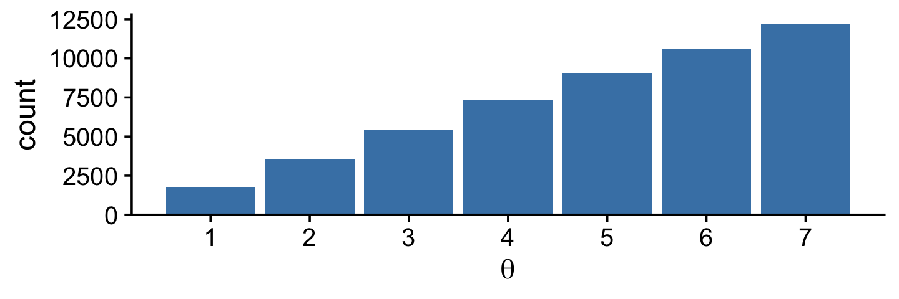
Did you notice that scale_y_continuous() line in the code? Claus Wilke, the author of the cowplot package, has a lot of thoughts on data visualization. He even wrote a (2019) book on it: Fundamentals of data visualization. In his (2020a) Themes vignette, Wilke recommended against allowing for space between the bottoms of the bars in a bar plot and the \(x\)-axis line. The ggplot2 default is to allow for such a space. Here we followed Wilke and suppressed that space with expand = expansion(mult = c(0, 0.05)). You can learn more about the ggplot2::expansion() function here.
Here’s the middle portion of Figure 7.2.
tibble(t = 1:5e4,
theta = positions) %>%
slice(1:500) %>%
ggplot(aes(x = theta, y = t)) +
geom_path(linewidth = 1/4, color = "steelblue") +
geom_point(size = 1/2, alpha = 1/2, color = "steelblue") +
scale_x_continuous(expression(theta), breaks = 1:7) +
scale_y_log10("Time Step", breaks = c(1, 2, 5, 20, 100, 500)) +
theme_cowplot()
And now we make the bottom.
tibble(x = 1:7,
y = 1:7) %>%
ggplot(aes(x = x, y = y)) +
geom_col(width = .2, fill = "steelblue") +
scale_x_continuous(expression(theta), breaks = 1:7) +
scale_y_continuous(expression(p(theta)), expand = expansion(mult = c(0, 0.05))) +
theme_cowplot()
Notice that the sampled relative frequencies closely mimic the actual relative populations in the bottom panel! In fact, a sequence generated this way will converge, as the sequence gets longer, to an arbitrarily close approximation of the actual relative probabilities. (p. 149)
7.2.3 General properties of a random walk.
The tajectory shown in Figure 7.2 is just one possible sequence of positions when the movement heuristic is applied. At each time step, the direction of the proposed move is random, and if the relative probability of the proposed position is less than that of the current position, then acceptance of the proposed move is also random. Because of the randomness, if the process were started over again, then the specific trajectory would almost certainly be different. Regardless of the specific trajectory, in the long run the relative frequency of visits mimics the target distribution.
Figure 7.3 shows the probability of being in each position as a function of time. (p. 149)
I was initially stumped on how to reproduce the simulation depicted in Figure 7.3. However, fellow enthusiast Cardy Moten III kindly shared a solution which was itself based on Kruschke’s blog post from 2012, Metropolis algorithm: Discrete position probabilities. Here’s a mild reworking of their solutions. First, we simulate.
nslots <- 7
p_target <- 1:7
p_target <- p_target / sum(p_target)
# construct the transition matrix
proposal_matrix <- matrix(0, nrow = nslots, ncol = nslots)
for(from_idx in 1:nslots) {
for(to_idx in 1:nslots) {
if(to_idx == from_idx - 1) {proposal_matrix[from_idx, to_idx] <- 0.5}
if(to_idx == from_idx + 1) {proposal_matrix[from_idx, to_idx] <- 0.5}
}
}
# construct the acceptance matrix
acceptance_matrix <- matrix(0, nrow = nslots, ncol = nslots)
for(from_idx in 1:nslots) {
for(to_idx in 1:nslots) {
acceptance_matrix[from_idx, to_idx] <- min(p_target[to_idx] / p_target[from_idx], 1)
}
}
# compute the matrix of move probabilities
move_matrix <- proposal_matrix * acceptance_matrix
# compute the transition matrix, including the probability of staying in place
transition_matrix <- move_matrix
for (diag_idx in 1:nslots) {
transition_matrix[diag_idx, diag_idx] = 1.0 - sum(move_matrix[diag_idx, ])
}
# specify starting position vector:
position_vec <- rep(0, nslots)
position_vec[round(nslots / 2)] <- 1.0
p <- list()
data <-
tibble(position = 1:nslots,
prob = position_vec)
# loop through the requisite time indexes
# update the data and transition vector
for(time_idx in 1:99) {
p[[time_idx]] <- data
# update the position vec
position_vec <- position_vec %*% transition_matrix
# update the data
data <- NULL
data <-
tibble(position = 1:nslots,
prob = t(position_vec))
}Now we wrangle and plot.
p %>%
as_tibble_col() %>%
mutate(facet = str_c("italic(t)==", 1:99)) %>%
slice(c(1:14, 99)) %>%
unnest(value) %>%
bind_rows(
tibble(position = 1:nslots,
prob = p_target,
facet = "target")
) %>%
mutate(facet = factor(facet, levels = c(str_c("italic(t)==", c(1:14, 99)), "target"))) %>%
# plot!
ggplot(aes(x = position, y = prob, fill = facet == "target")) +
geom_col(width = .2) +
scale_fill_manual(values = c("steelblue", "goldenrod2"), breaks = NULL) +
scale_x_continuous(expression(theta), breaks = 1:7) +
scale_y_continuous(expression(italic(p)(theta)), expand = expansion(mult = c(0, 0.05))) +
theme_cowplot() +
facet_wrap(~ facet, scales = "free_y", labeller = label_parsed)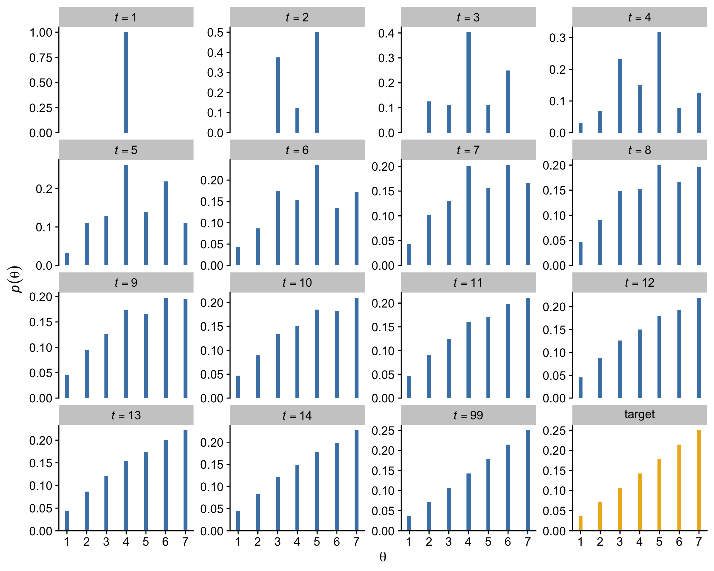
7.2.4 Why we care.
Through the simple magic of the random walk procedure,
we are able to do indirectly something we could not necessarily do directly: We can generate random samples from the target distribution. Moreover, we can generate those random samples from the target distribution even when the target distribution is not normalized.
This technique is profoundly useful when the target distribution \(P(\theta)\) is a posterior proportional to \(p(D | \theta) p(\theta)\). Merely by evaluating \(p(D | \theta) p(\theta)\), without normalizing it by \(p(D)\), we can generate random representative values from the posterior distribution. This result is wonderful because the method obviates direct computation of the evidence \(p(D)\), which, as you’ll recall, is one of the most difficult aspects of Bayesian inference. By using MCMC techniques, we can do Bayesian inference in rich and complex models. It has only been with the development of MCMC algorithms and software that Bayesian inference is applicable to complex data analysis, and it has only been with the production of fast and cheap computer hardware that Bayesian inference is accessible to a wide audience. (p. 152, emphasis in the original)
7.3 The Metropolis algorithm more generally
“The procedure described in the previous section was just a special case of a more general procedure known as the Metropolis algorithm, named after the first author of a famous article (Metropolis et al., 1953)” (p. 156).
Here’s how to generate a proposed jump from a zero-mean normal distribution with a standard deviation of 0.2.
rnorm(1, mean = 0, sd = 0.2)## [1] -0.1985524To get a sense of what draws from rnorm() looks like in the long run, we might plot.
mu <- 0
sigma <- 0.2
# how many proposals would you like?
n <- 500
set.seed(7)
tibble(proposed_jump = rnorm(n, mean = mu, sd = sigma)) %>%
ggplot(aes(x = proposed_jump, y = 0)) +
geom_jitter(width = 0, height = .1,
size = 1/2, alpha = 1/2, color = "steelblue") +
# this is the idealized distribution
stat_function(fun = dnorm, args = list(mean = mu, sd = sigma),
color = "steelblue") +
scale_x_continuous(breaks = seq(from = -0.6, to = 0.6, length.out = 7)) +
scale_y_continuous(NULL, breaks = NULL) +
labs(title = "Jump proposals",
subtitle = "The blue line shows the data generating distribution.") +
theme_cowplot()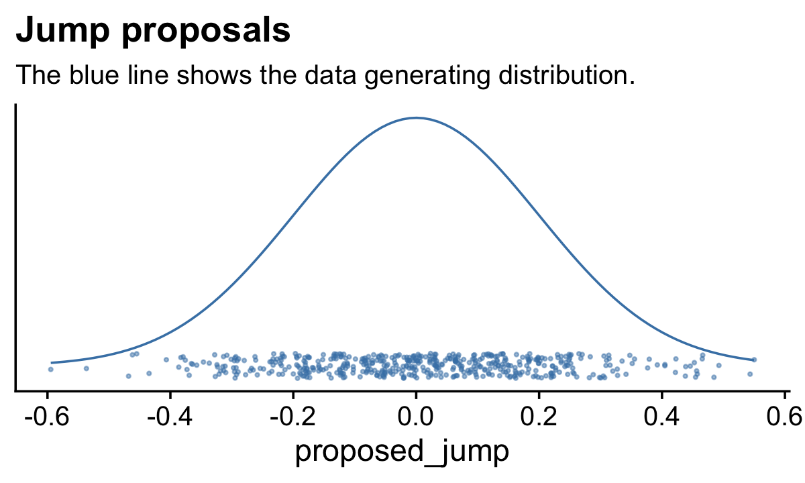
Anyway,
having generated a proposed new position, the algorithm then decides whether or not to accept the proposal. The decision rule is exactly what was already specified in Equation 7.1. In detail, this is accomplished by computing the ratio \(p_\text{move} = P(\theta_\text{proposed}) / P(\theta_\text{current})\). Then a random number from the uniform interval \([0, 1]\) is generated; in R, this can be accomplished with the command
runif(1). If the random number is between \(0\) and pmove, then the move is accepted. (p. 157)
We’ll see what that might look like in the next section. In the meantime, here’s how to use runif().
runif(1)## [1] 0.2783186Just for kicks, here’s what that looks like in bulk.
# how many proposals would you like?
n <- 500
set.seed(7)
tibble(draw = runif(n)) %>%
ggplot(aes(x = draw, y = 0)) +
geom_jitter(width = 0, height = 1/4,
size = 1/2, alpha = 1/2, color = "steelblue") +
stat_function(fun = dunif,
color = "steelblue") +
scale_y_continuous(NULL, breaks = NULL, limits = c(-1/3, 5/3)) +
labs(title = "Uniform draws",
subtitle = "The blue line shows the data generating distribution.") +
theme_cowplot()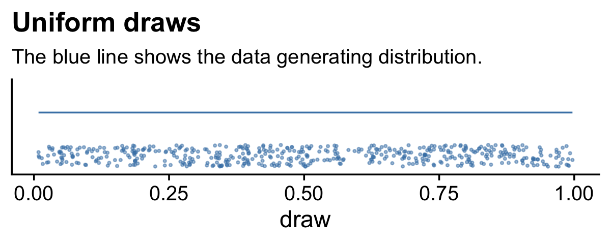
We do not see a concentration towards the mean, this time. The draws are uniformly distributed across the parameter space.
7.3.1 Metropolis algorithm applied to Bernoulli likelihood and beta prior.
You can find Kruschke’s code in the BernMetrop.R file. I’m going to break it up a little.
# specify the data, to be used in the likelihood function.
my_data <- c(rep(0, 6), rep(1, 14))
# define the Bernoulli likelihood function, p(D|theta).
# the argument theta could be a vector, not just a scalar
likelihood <- function(theta, data) {
z <- sum(data)
n <- length(data)
p_data_given_theta <- theta^z * (1 - theta)^(n - z)
# the theta values passed into this function are generated at random,
# and therefore might be inadvertently greater than 1 or less than 0.
# the likelihood for theta > 1 or for theta < 0 is zero
p_data_given_theta[theta > 1 | theta < 0] <- 0
return(p_data_given_theta)
}
# define the prior density function.
prior_d <- function(theta) {
p_theta <- dbeta(theta, 1, 1)
# the theta values passed into this function are generated at random,
# and therefore might be inadvertently greater than 1 or less than 0.
# the prior for theta > 1 or for theta < 0 is zero
p_theta[theta > 1 | theta < 0] = 0
return(p_theta)
}
# define the relative probability of the target distribution,
# as a function of vector theta. for our application, this
# target distribution is the unnormalized posterior distribution
target_rel_prob <- function(theta, data) {
target_rel_prob <- likelihood(theta, data) * prior_d(theta)
return(target_rel_prob)
}
# specify the length of the trajectory, i.e., the number of jumps to try:
traj_length <- 50000 # this is just an arbitrary large number
# initialize the vector that will store the results
trajectory <- rep(0, traj_length)
# specify where to start the trajectory:
trajectory[1] <- 0.01 # another arbitrary value
# specify the burn-in period
burn_in <- ceiling(0.0 * traj_length) # arbitrary number, less than `traj_length`
# initialize accepted, rejected counters, just to monitor performance:
n_accepted <- 0
n_rejected <- 0That first part follows what Kruschke put in his script. I’m going to bundel the next large potion in a fucntion, my_metropolis() which will make it easier to plug the code into the purrr::map() function.
my_metropolis <- function(proposal_sd) {
# now generate the random walk. the 't' index is time or trial in the walk.
# specify seed to reproduce same random walk
set.seed(47405)
## I'm taking this section out and will replace it
# # specify standard deviation of proposal distribution
# proposal_sd <- c(0.02, 0.2, 2.0)[2]
## end of the section I took out
for (t in 1:(traj_length - 1)) {
current_position <- trajectory[t]
# use the proposal distribution to generate a proposed jump
proposed_jump <- rnorm(1, mean = 0, sd = proposal_sd)
# compute the probability of accepting the proposed jump
prob_accept <- min(1,
target_rel_prob(current_position + proposed_jump, my_data)
/ target_rel_prob(current_position, my_data))
# generate a random uniform value from the interval [0, 1] to
# decide whether or not to accept the proposed jump
if (runif(1) < prob_accept) {
# accept the proposed jump
trajectory[t + 1] <- current_position + proposed_jump
# increment the accepted counter, just to monitor performance
if (t > burn_in) {n_accepted <- n_accepted + 1}
} else {
# reject the proposed jump, stay at current position
trajectory[t + 1] <- current_position
# increment the rejected counter, just to monitor performance
if (t > burn_in) {n_rejected <- n_rejected + 1}
}
}
# extract the post-burn_in portion of the trajectory
accepted_traj <- trajectory[(burn_in + 1) : length(trajectory)]
tibble(accepted_traj = accepted_traj,
n_accepted = n_accepted,
n_rejected = n_rejected)
# end of Metropolis algorithm
}Now we have my_metropolis(), we can run the analysis based on the three proposal_sd values, nesting the results in a tibble.
d <-
tibble(proposal_sd = c(0.02, 0.2, 2.0)) %>%
mutate(accepted_traj = map(proposal_sd, my_metropolis)) %>%
unnest(accepted_traj)
glimpse(d)## Rows: 150,000
## Columns: 4
## $ proposal_sd <dbl> 0.02, 0.02, 0.02, 0.02, 0.02, 0.02, 0.02, 0.02, 0.02, 0.02, 0.02, 0.02, 0.02…
## $ accepted_traj <dbl> 0.01000000, 0.01000000, 0.01000000, 0.01000000, 0.01149173, 0.02550380, 0.02…
## $ n_accepted <dbl> 46801, 46801, 46801, 46801, 46801, 46801, 46801, 46801, 46801, 46801, 46801,…
## $ n_rejected <dbl> 3198, 3198, 3198, 3198, 3198, 3198, 3198, 3198, 3198, 3198, 3198, 3198, 3198…Now we have d in hand, here’s the top portion of Figure 7.4.
d <-
d %>%
mutate(proposal_sd = str_c("Proposal SD = ", proposal_sd),
iter = rep(1:50000, times = 3))
d %>%
ggplot(aes(x = accepted_traj, y = 0)) +
stat_histinterval(point_interval = mode_hdi, .width = .95,
fill = "steelblue", slab_color = "white", outline_bars = T,
breaks = 40, normalize = "panels") +
scale_x_continuous(expression(theta), breaks = 0:5 * 0.2) +
scale_y_continuous(NULL, breaks = NULL) +
theme_cowplot() +
panel_border() +
facet_wrap(~ proposal_sd, ncol = 3)
The modes are the points and the lines depict the 95% HDIs. Also, did you notice our use of the cowplot::panel_border() function? The settings from theme_cowplot() can make it difficult to differentiate among subplots when faceting. By throwing in a call to panel_border() after theme_cowplot(), we added in lightweight panel borders.
Here’s the middle of Figure 7.4.
d %>%
ggplot(aes(x = accepted_traj, y = iter)) +
geom_path(linewidth = 1/4, color = "steelblue") +
geom_point(size = 1/2, alpha = 1/2, color = "steelblue") +
scale_x_continuous(expression(theta), breaks = 0:5 * 0.2, limits = c(0, 1)) +
scale_y_continuous("Step in Chain", limits = c(49900, 50000)) +
ggtitle("End of Chain") +
theme_cowplot() +
panel_border() +
facet_wrap(~ proposal_sd, ncol = 3)
The bottom:
d %>%
ggplot(aes(x = accepted_traj, y = iter)) +
geom_path(linewidth = 1/4, color = "steelblue") +
geom_point(size = 1/2, alpha = 1/2, color = "steelblue") +
scale_x_continuous(expression(theta), breaks = 0:5 * 0.2, limits = c(0, 1)) +
scale_y_continuous("Step in Chain", limits = c(1, 100)) +
ggtitle("End of Chain") +
theme_cowplot() +
panel_border() +
facet_wrap(~ proposal_sd, ncol = 3)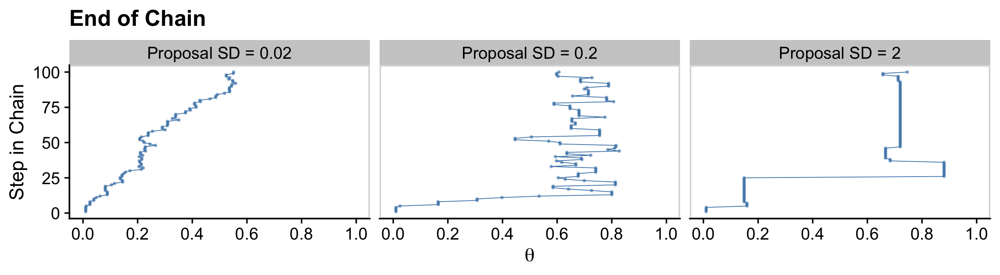
Regardless of the which proposal distribution in Figure 7.4 is used, the Metropolis algorithm will eventually produce an accurate representation of the posterior distribution, as is suggested by the histograms in the upper row of Figure 7.4. What differs is the efficiency of achieving a good approximation. (p. 160)
Before we move on, you may have noticed the top row of Kruschke’s Figure 7.4 contains the estimates for the effective sample size (Eff.Sz.) for each chain, which Kruschke briefly mentioned on page 160. We’ll walk out effective sample sizes, later. But for now we can compute them with some of the helper functions from the posterior package (Bürkner et al., 2021). As it turns out, there are several kinds of effective sample size. With regards to the helper functions from posterior, I suspect the one closest to what Kruschke used in the text will be ess_mean(). Here’s how you might use ess_mean() to compute the Eff.Sz. estimate for each of our three chains.
d %>%
select(proposal_sd, accepted_traj) %>%
group_by(proposal_sd) %>%
summarise(Eff.Sz. = posterior::ess_mean(accepted_traj))## # A tibble: 3 × 2
## proposal_sd Eff.Sz.
## <chr> <dbl>
## 1 Proposal SD = 0.02 500.
## 2 Proposal SD = 0.2 11340.
## 3 Proposal SD = 2 2105.7.3.2 Summary of Metropolis algorithm.
The motivation for methods like the Metropolis algorithm is that they provide a high-resolution picture of the posterior distribution, even though in complex models we cannot explicitly solve the mathematical integral in Bayes’ rule. The idea is that we get a handle on the posterior distribution by generating a large sample of representative values. The larger the sample, the more accurate is our approximation. As emphasized previously, this is a sample of representative credible parameter values from the posterior distribution; it is not a resampling of data (there is a fixed data set).
The cleverness of the method is that representative parameter values can be randomly sampled from complicated posterior distributions without solving the integral in Bayes’ rule, and by using only simple proposal distributions for which efficient random number generators already exist. (p. 161)
7.4 Toward Gibbs sampling: Estimating two coin biases
“The Metropolis method is very useful, but it can be inefficient. Other methods can be more efficient in some situations” (p. 162).
7.4.1 Prior, likelihood and posterior for two biases.
We are considering situations in which there are two underlying biases, namely \(\theta_1\) and \(\theta_2\), for the two coins. We are trying to determine what we should believe about these biases after we have observed some data from the two coins. Recall that [Kruschke used] the term “bias” as the name of the parameter \(\theta\), and not to indicate that the value of \(\theta\) deviates from \(0.5\)….
What we have to do next is specify a particular mathematical form for the prior distribution. We will work through the mathematics of a particular case for two reasons: First, it will allow us to explore graphical displays of two-dimensional parameter spaces, which will inform our intuitions about Bayes’ rule and sampling from the posterior distribution. Second, the mathematics will set the stage for a specific example of Gibbs sampling. Later in the book when we do applied Bayesian analysis, we will not be doing any of this sort of mathematics. We are doing the math now, for simple cases, to understand how the methods work so we can properly interpret their outputs in realistically complex cases. (pp. 163–165, emphasis in the original)
7.4.2 The posterior via exact formal analysis.
The plots in the left column of Figure 7.5 are outside of my skill set. I believe they are referred to as wireframe plots and it’s my understanding that ggplot2 does not support wireframe plots at this time. However, I can reproduce versions of the right hand column. For our initial attempt for the upper right corner, we’ll simulate.
set.seed(7)
betas <-
tibble(theta_1 = rbeta(1e5, shape1 = 2, shape2 = 2),
theta_2 = rbeta(1e5, shape1 = 2, shape2 = 2))
betas %>%
ggplot(aes(x = theta_1, y = theta_2)) +
stat_density_2d() +
labs(x = expression(theta[1]),
y = expression(theta[2])) +
coord_equal() +
theme_cowplot()
Instead of the contour lines, one might use color to depict the density variable.
betas %>%
ggplot(aes(x = theta_1, y = theta_2, fill = after_stat(density))) +
stat_density_2d(geom = "raster", contour = F) +
scale_fill_viridis_c(option = "A") +
labs(x = expression(theta[1]),
y = expression(theta[2])) +
coord_equal() +
theme_cowplot()
Remember how we talked about suppressing the unsightly white space between the bottom of bar-plot bars and the \(x\)-axis? Well, look at all that unsightly white space between the axes and the boundaries of the parameter space in our bivariate Beta plot. We can further flex our expansion() skills to get rid of those in the next plot. Speaking of which, we might make a more precise version of that plot with the dbeta() function. This approach is also more in line with the title of this subsection: The posterior via exact formal analysis.
theta_sequence <- seq(from = 0, to = 1, by = .01)
crossing(theta_1 = theta_sequence,
theta_2 = theta_sequence) %>%
mutate(prior_1 = dbeta(x = theta_1, shape1 = 2, shape2 = 2),
prior_2 = dbeta(x = theta_2, shape1 = 2, shape2 = 2)) %>%
ggplot(aes(x = theta_1, y = theta_2, fill = prior_1 * prior_2)) +
geom_tile() +
scale_fill_viridis_c("joint prior density", option = "A") +
scale_x_continuous(expression(theta[1]), expand = expansion(mult = 0)) +
scale_y_continuous(expression(theta[2]), expand = expansion(mult = 0)) +
coord_equal() +
theme_cowplot()
Look at that–no more unsightly white space! We’ll need the bernoulli_likelihood() function from back in Chapter 6 for the middle right of Figure 7.5.
bernoulli_likelihood <- function(theta, data) {
# theta = success probability parameter ranging from 0 to 1
# data = the vector of data (i.e., a series of 0's and 1's)
n <- length(data)
z <- sum(data)
return(theta^z * (1 - theta)^(n - sum(data)))
}With our trusty bernoulli_likelihood() function in hand, we’re almost ready to compute and plot the likelihood. We just need to define our data.
# set the parameters
# coin 1
n1 <- 8
z1 <- 6
# coin 2
n2 <- 7
z2 <- 2
# use the parameters to make the data
theta_1_data <- rep(0:1, times = c(n1 - z1, z1))
theta_2_data <- rep(0:1, times = c(n2 - z2, z2))
# take a look
theta_1_data## [1] 0 0 1 1 1 1 1 1theta_2_data## [1] 0 0 0 0 0 1 1Note how these data sequences are of different sample sizes \((N_1 = 8; N_2 = 7 )\). Though it doesn’t matter much for the formal analysis approach, this will become very important when we fit the model with brms. But for right now, we’re finally ready to make a version of the middle right panel of Figure 7.5.
crossing(theta_1 = theta_sequence,
theta_2 = theta_sequence) %>%
mutate(likelihood_1 = bernoulli_likelihood(theta = theta_1,
data = theta_1_data),
likelihood_2 = bernoulli_likelihood(theta = theta_2,
data = theta_2_data)) %>%
ggplot(aes(x = theta_1, y = theta_2, fill = likelihood_1 * likelihood_2)) +
geom_tile() +
scale_fill_viridis_c("joint likelihood", option = "A") +
scale_x_continuous(expression(theta[1]), expand = expansion(mult = 0)) +
scale_y_continuous(expression(theta[2]), expand = expansion(mult = 0)) +
coord_equal() +
theme_cowplot()
Here’s how to make the two-dimensional posterior in the lower right panel of Figure 7.5.
# this is a redo from two plots up, but saved as `d_prior`
d_prior <-
crossing(theta_1 = theta_sequence,
theta_2 = theta_sequence) %>%
mutate(prior_1 = dbeta(x = theta_1, shape1 = 2, shape2 = 2),
prior_2 = dbeta(x = theta_2, shape1 = 2, shape2 = 2))
# this is a redo from one plot up, but saved as `d_likelihood`
d_likelihood <-
crossing(theta_1 = theta_sequence,
theta_2 = theta_sequence) %>%
mutate(likelihood_1 = bernoulli_likelihood(theta = theta_1,
data = theta_1_data),
likelihood_2 = bernoulli_likelihood(theta = theta_2,
data = theta_2_data))
# here we combine `d_prior` and `d_likelihood`
d_prior %>%
left_join(d_likelihood, by = c("theta_1", "theta_2")) %>%
# we need the marginal likelihood, the denominator in Bayes' rule
mutate(marginal_likelihood = sum(prior_1 * prior_2 * likelihood_1 * likelihood_2)) %>%
# finally, the two-dimensional posterior
mutate(posterior = (prior_1 * prior_2 * likelihood_1 * likelihood_2) / marginal_likelihood) %>%
# plot!
ggplot(aes(x = theta_1, y = theta_2, fill = posterior)) +
geom_tile() +
scale_fill_viridis_c(expression(italic(p)(theta[1]*', '*theta[2]*'|'*D)), option = "A") +
scale_x_continuous(expression(theta[1]), expand = expansion(mult = 0)) +
scale_y_continuous(expression(theta[2]), expand = expansion(mult = 0)) +
coord_equal() +
theme_cowplot()
That last plot, my friends, is a depiction of
\[p(\theta_1, \theta_2 | D) = \frac{p(D | \theta_1, \theta_2) p(\theta_1, \theta_2)}{p(D)}.\]
7.4.3 The posterior via the Metropolis algorithm.
I initially skipped over this section because the purpose of this book is to explore Kruschke’s material with brms, which does not use the Metropolis algorithm (which really is primarily of historic interest, at this point). However, fellow enthusiast Omid Ghasemi worked it through and kindly shared his solution. The workflow, below, is based heavily on his, with a few small adjustments.
To start off, we’ll refresh our two data sources and define a few custom functions.
# we've already defined these, but here they are again
theta_1_data <- rep(0:1, times = c(n1 - z1, z1))
theta_2_data <- rep(0:1, times = c(n2 - z2, z2))
# define the bivariate Bernoulli likelihood
bivariate_bernoulli_likelihood <- function(theta1, data1, theta2, data2) {
z1 <- sum(data1)
n1 <- length(data1)
z2 <- sum(data2)
n2 <- length(data2)
p_data_given_theta <- (theta1^z1 * (1 - theta1)^(n1 - z1)) * (theta2^z2 * (1 - theta2)^(n2 - z2))
p_data_given_theta[theta1 > 1 | theta1 < 0] <- 0
p_data_given_theta[theta2 > 1 | theta2 < 0] <- 0
return(p_data_given_theta)
}
# we need to update the prior density function from above
prior_d <- function(theta1, theta2) {
p_theta <- dbeta(theta1, 1, 1) * dbeta(theta2, 1, 1)
p_theta[theta1 > 1 | theta1 < 0] = 0
p_theta[theta2 > 1 | theta2 < 0] = 0
return(p_theta)
}
# we also need to update how we define the relative probability of the target distribution
target_rel_prob <- function(theta1, data1, theta2, data2) {
l <- bivariate_bernoulli_likelihood(theta1, data1, theta2, data2)
p <- prior_d(theta1, theta2)
target_rel_prob <- l * p
return(target_rel_prob)
}The next bit defines how we’ll apply the Metropolis algorithm to our bivariate Bernoulli data. Although the guts contain a lot of moving parts, there are only two parameters at the top level. The traj_length argument is set to 50,000, which will be our default number of MCMC draws. Of greater interest is the proposal_sd argument. From the text, we read:
Recall that the Metropolis algorithm is a random walk through the parameter space that starts at some arbitrary point. We propose a jump to a new point in parameter space, with the proposed jump randomly generated from a proposal distribution from which it is easy to generate values. For our present purposes, the proposal distribution is a bivariate normal. (p. 168, emphasis in the original)
For this exercise, the bivariate normal proposal distribution is centered at zero with an adjustable standard deviation. In the text, Kruschke compared the results for \(\operatorname{Normal}(0, 0.02)\) and \(\operatorname{Normal}(0, 0.2)\). For our my_bivariate_metropolis() function, the proposal_sd argument controls that \(\sigma\) parameter.
my_bivariate_metropolis <- function(proposal_sd = 0.02,
# specify the length of the trajectory (i.e., the number of jumps to try)
traj_length = 50000) {
# initialize the vector that will store the results
trajectory1 <- rep(0, traj_length)
trajectory2 <- rep(0, traj_length)
# specify where to start the trajectory:
trajectory1[1] <- 0.5 # another arbitrary value
trajectory2[1] <- 0.5 # another arbitrary value
# specify the burn-in period
burn_in <- ceiling(0.0 * traj_length) # arbitrary number, less than `traj_length`
# initialize accepted, rejected counters, just to monitor performance:
n_accepted <- 0
n_rejected <- 0
for (t in 1:(traj_length - 1)) {
current_position1 <- trajectory1[t]
current_position2 <- trajectory2[t]
# use the proposal distribution to generate a proposed jump
proposed_jump1 <- rnorm(1, mean = 0, sd = proposal_sd)
proposed_jump2 <- rnorm(1, mean = 0, sd = proposal_sd)
# compute the probability of accepting the proposed jump
prob_accept <- min(1,
target_rel_prob(current_position1 + proposed_jump1, theta_1_data,
current_position2 + proposed_jump2, theta_2_data)
/ target_rel_prob(current_position1, theta_1_data, current_position2, theta_2_data))
# generate a random uniform value from the interval [0, 1] to
# decide whether or not to accept the proposed jump
if (runif(1) < prob_accept) {
# accept the proposed jump
trajectory1[t + 1] <- current_position1 + proposed_jump1
trajectory2[t + 1] <- current_position2 + proposed_jump2
# increment the accepted counter, just to monitor performance
if (t > burn_in) {n_accepted <- n_accepted + 1}
} else {
# reject the proposed jump, stay at current position
trajectory1[t + 1] <- current_position1
trajectory2[t + 1] <- current_position2
# increment the rejected counter, just to monitor performance
if (t > burn_in) {n_rejected <- n_rejected + 1}
}
}
# extract the post-burn_in portion of the trajectory
accepted_traj1 <- trajectory1[(burn_in + 1) : length(trajectory1)]
accepted_traj2 <- trajectory2[(burn_in + 1) : length(trajectory2)]
# collect the results
metrop_2d_data <-
tibble(iter = rep(1:traj_length),
accepted_traj1 = accepted_traj1,
accepted_traj2 = accepted_traj2,
n_accepted = n_accepted,
n_rejected = n_rejected)
return(metrop_2d_data)
}Now we’ve defined my_bivariate_metropolis() let’s apply it to our data with proposal_sd == 0.02 and proposal_sd == 0.2. We’ll save the results as mh.
mh <-
tibble(proposal_sd = c(0.02, 0.2)) %>%
mutate(mh = map(proposal_sd, my_bivariate_metropolis)) %>%
unnest(mh)
mh## # A tibble: 100,000 × 6
## proposal_sd iter accepted_traj1 accepted_traj2 n_accepted n_rejected
## <dbl> <int> <dbl> <dbl> <dbl> <dbl>
## 1 0.02 1 0.5 0.5 46401 3598
## 2 0.02 2 0.535 0.486 46401 3598
## 3 0.02 3 0.541 0.477 46401 3598
## 4 0.02 4 0.507 0.495 46401 3598
## 5 0.02 5 0.511 0.484 46401 3598
## 6 0.02 6 0.522 0.500 46401 3598
## 7 0.02 7 0.544 0.491 46401 3598
## 8 0.02 8 0.572 0.473 46401 3598
## 9 0.02 9 0.591 0.509 46401 3598
## 10 0.02 10 0.579 0.513 46401 3598
## # … with 99,990 more rowsIf you look at the top of Figure 7.6, you’ll see Kruschke summarized his results with the acceptance rate, \(N_\text{acc} / N_\text{pro}\). Here are ours.
mh %>%
group_by(proposal_sd) %>%
slice(1) %>%
summarise(acceptance_rate = n_accepted / (n_accepted + n_rejected))## # A tibble: 2 × 2
## proposal_sd acceptance_rate
## <dbl> <dbl>
## 1 0.02 0.928
## 2 0.2 0.428We can compute our effective sample sizes using the effectiveSize() function from the coda package (Plummer et al., 2006, 2020).
library(coda)
mh %>%
group_by(proposal_sd) %>%
summarise(ess_theta_1 = effectiveSize(accepted_traj1),
ess_theta_2 = effectiveSize(accepted_traj2))## # A tibble: 2 × 3
## proposal_sd ess_theta_1 ess_theta_2
## <dbl> <dbl> <dbl>
## 1 0.02 188. 194.
## 2 0.2 6673. 5987.We really won’t use the coda package in this ebook beyond this chapter and the next. But do note it has a lot to offer and Kruschke used it a bit in his code.
Recall we might also compute the effective sample size estimates with functions from posterior, like at the end of Section 7.3.1. Here are the results using ess_mean() and ess_bulk().
# posterior::ess_mean()
mh %>%
group_by(proposal_sd) %>%
summarise(ess_theta_1 = posterior::ess_mean(accepted_traj1),
ess_theta_2 = posterior::ess_mean(accepted_traj2))## # A tibble: 2 × 3
## proposal_sd ess_theta_1 ess_theta_2
## <dbl> <dbl> <dbl>
## 1 0.02 195. 164.
## 2 0.2 6566. 6073.# posterior::ess_bulk()
mh %>%
group_by(proposal_sd) %>%
summarise(ess_theta_1 = posterior::ess_bulk(accepted_traj1),
ess_theta_2 = posterior::ess_bulk(accepted_traj2))## # A tibble: 2 × 3
## proposal_sd ess_theta_1 ess_theta_2
## <dbl> <dbl> <dbl>
## 1 0.02 210. 172.
## 2 0.2 6782. 6206.Different functions from different packages yield different results. Exciting, eh? Welcome to applied statistics, friends. Anyway, now we make our version of Figure 7.6.
mh %>%
filter(iter < 1000) %>%
ggplot(aes(x = accepted_traj1, y = accepted_traj2)) +
geom_path(linewidth = 1/8, alpha = 1/2, color = "steelblue") +
geom_point(alpha = 1/4, color = "steelblue") +
scale_x_continuous(expression(theta[1]), breaks = 0:5 / 5, expand = c(0, 0), limits = c(0, 1)) +
scale_y_continuous(expression(theta[2]), breaks = 0:5 / 5, expand = c(0, 0), limits = c(0, 1)) +
coord_equal() +
theme_cowplot() +
panel_border() +
theme(panel.spacing.x = unit(0.75, "cm")) +
facet_wrap(~ proposal_sd, labeller = label_both)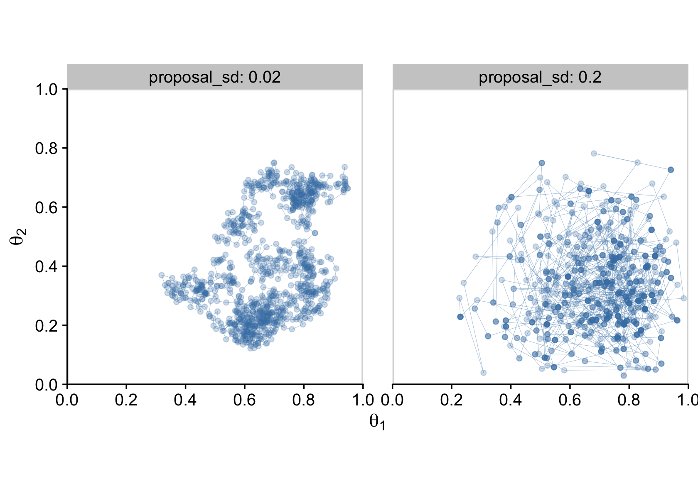
In the limit of infinite random walks, the Metropolis algorithm yields arbitrarily accurate representations of the underlying posterior distribution. The left and right panels of Figure 7.6 would eventually converge to an identical and highly accurate approximation to the posterior distribution. But in the real world of finite random walks, we care about how efficiently the algorithm generates an accurate representative sample. We prefer to use the proposal distribution from the right panel of Figure 7.6 because it will, typically, produce a more accurate approximation of the posterior than the proposal distribution from left panel, for the same number of proposed jumps. (p. 170)
7.4.4 Gibbs Hamiltonian Monte Carlo sampling.
Figure 7.7 is still out of my skill set. But let’s fit the model with our primary package, brms. First we need to load brms.
library(brms)These, recall, are the data.
theta_1_data## [1] 0 0 1 1 1 1 1 1theta_2_data## [1] 0 0 0 0 0 1 1Kruschke said he was starting us out simply. From a regression perspective, we are getting ready to fit an intercepts-only multivariate Bernoulli model, which isn’t the simplest of things to code into brms. Plus, this particular pair of data sets presents a complication we won’t usually have to contend with in this book: The data vectors are different lengths. Remember how we pointed that out in Section 7.4.2? The issue is that whereas brms has extensive multivariate capacities (Bürkner, 2022b), they’re usually designed for data with equal sample sizes (i.e., when the rows in the two columns of a data frame are of the same number). Since these are Bernoulli data, we have two options at our disposal:
- employ the
resp_subset()helper function or - fit an aggregated binomial2 model.
Since each has its strengths and weaknesses, we’ll split this section up and fit the model both ways.
7.4.4.1 Uneven multivariate Benoulli via the resp_subset() approach.
Though brms can receive data from a few different formats, our approach throughout this ebook will usually be with data frames or tibbles. Here’s how we might combine our two data vectors, theta_1_data and theta_2_data, into a single tibble called d.
d <-
tibble(y1 = theta_1_data,
y2 = c(theta_2_data, NA))
# what is this?
d## # A tibble: 8 × 2
## y1 y2
## <int> <int>
## 1 0 0
## 2 0 0
## 3 1 0
## 4 1 0
## 5 1 0
## 6 1 1
## 7 1 1
## 8 1 NABecause the second data vector was one unit shorter than the first, we had to compensate by adding an eighth cell, which we coded as NA, the universal indicator for missing values within the R ecosystem.
We’ll still need one more data column, though. Using the if_else() function, we will make a subset column with will be coded TRUE for all non-NA values in the y2 columns, and FALSE whenever is.na(y2).
d <-
d %>%
mutate(subset = if_else(is.na(y2), FALSE, TRUE))
# what is this?
d## # A tibble: 8 × 3
## y1 y2 subset
## <int> <int> <lgl>
## 1 0 0 TRUE
## 2 0 0 TRUE
## 3 1 0 TRUE
## 4 1 0 TRUE
## 5 1 0 TRUE
## 6 1 1 TRUE
## 7 1 1 TRUE
## 8 1 NA FALSEbrms includes a handful of helper functions that let users incorporate additional information about the criterion variable(s) into the model. For a full listing of these helper functions, check out the addition-terms section of the brms reference manual (Bürkner, 2022f). Though we won’t be using a lot of these in this ebook, it just so turns out that two of them will come in handy for our multivariate Bernoulli data. In this case, we want the resp_subset() helper function, which, in practice, we will just call subset(). From the brms reference manual, we read:
For multivariate models,
subsetmay be used in theatermspart, to use different subsets of the data in different univariate models. For instance, ifsubis a logical variable andyis the response of one of the univariate models, we may writey | subset(sub) ~ predictorsso thatyis predicted only for those observations for whichsubevaluates toTRUE. (p. 42)
In our case, the subset variable in the data tibble will be the logical variable for our criterion y2, which would leave us with the formula y2 | subset(subset) ~ 1. Note the use of the | operator, which is what you always use when adding information with a helper function of this kind. Since we will be using the data in all eight rows of the y1 column, that corresponding formula would just be y1 ~ 1. In both cases, the ~ 1 portions of the formulas indicates these are intercept-only models. There are not predictors for either variable.
Next, we need to talk about how to combine these two formulas within the multivariate syntax. If you look through Bürkner’s (2022b) vignette, Estimating multivariate models with brms, you’ll see there are several ways to define a multivariate model with brms. In this case, I think it’ll be easiest to define each model as a separate object, which we’ll call model_1 and model_2.
model_1 <- bf(y1 ~ 1)
model_2 <- bf(y2 | subset(subset) ~ 1)Note how the formula syntax for each was wrapped within the bf() function. That’s shorthand for brmsformula(). If you wanted to, you could have defined these as model_1 <- brmsformula(y1 ~ 1), and so on.
Another issue we need to contend with is Kruschke’s \(\operatorname{Beta}(2, 2)\) prior. By default, brms assumes an unbounded parameter space for the standard intercept priors. But we know that the beta distribution imposes boundaries within the range of \([0, 1]\). This is technically okay with a standard brms intercept prior, but it can lead to computational difficulties. When possible, it’s better to formally tell brms when you are using bounded priors. Here, then, is how we’ll define our \(\operatorname{Beta}(2, 2)\) prior within the prior() function.
prior(beta(2, 2), class = Intercept, lb = 0, ub = 1, resp = y1)We set the lower boundary with the lb argument and then set the upper boundary with the ub argument. Also notice our use of the resp argument, which told brms this prior was connected to the y1 criterion. For the other criterion, we’d set that to resp = y2.
Okay, here’s how to put all of this together to fit the model.
fit7.1a <-
brm(data = d,
family = bernoulli(link = identity),
model_1 + model_2,
prior = c(prior(beta(2, 2), class = Intercept, lb = 0, ub = 1, resp = y1),
prior(beta(2, 2), class = Intercept, lb = 0, ub = 1, resp = y2)),
iter = 3000, warmup = 500, cores = 3, chains = 3,
seed = 7,
file = "fits/fit07.01a")Notice how we combined our two model objects with the + operator (model_1 + model_2). Here is a summary of the results.
print(fit7.1a)## Family: MV(bernoulli, bernoulli)
## Links: mu = identity
## mu = identity
## Formula: y1 ~ 1
## y2 | subset(subset) ~ 1
## Data: d (Number of observations: 8)
## Draws: 3 chains, each with iter = 3000; warmup = 500; thin = 1;
## total post-warmup draws = 7500
##
## Population-Level Effects:
## Estimate Est.Error l-95% CI u-95% CI Rhat Bulk_ESS Tail_ESS
## y1_Intercept 0.67 0.13 0.40 0.88 1.00 5950 4467
## y2_Intercept 0.36 0.14 0.12 0.65 1.00 4632 3445
##
## Draws were sampled using sampling(NUTS). For each parameter, Bulk_ESS
## and Tail_ESS are effective sample size measures, and Rhat is the potential
## scale reduction factor on split chains (at convergence, Rhat = 1).Here we’ll use the as_draws_df() function to collect out posterior draws and save them as a data frame, which we’ll name draws.a.
draws.a <- as_draws_df(fit7.1a)
# what is this?
head(draws.a)## # A draws_df: 6 iterations, 1 chains, and 4 variables
## b_y1_Intercept b_y2_Intercept lprior lp__
## 1 0.60 0.33 0.65 -11
## 2 0.73 0.33 0.45 -11
## 3 0.62 0.38 0.69 -11
## 4 0.61 0.43 0.74 -11
## 5 0.66 0.45 0.70 -11
## 6 0.50 0.32 0.68 -12
## # ... hidden reserved variables {'.chain', '.iteration', '.draw'}With draws.a in hand, we’re ready to make our version of Figure 7.8. To reduce the overplotting, we’re only looking at the first 500 post-warmup draws.
p1 <-
draws.a %>%
filter(.draw < 501) %>%
ggplot(aes(x = b_y1_Intercept, y = b_y2_Intercept)) +
geom_point(alpha = 1/4, color = "steelblue") +
geom_path(linewidth = 1/10, alpha = 1/2, color = "steelblue") +
scale_x_continuous(expression(theta[1]), breaks = 0:5 / 5, expand = c(0, 0), limits = 0:1) +
scale_y_continuous(expression(theta[2]), breaks = 0:5 / 5, expand = c(0, 0), limits = 0:1) +
labs(subtitle = "fit7.1a (resp_subset() method)") +
coord_equal() +
theme_cowplot()
p1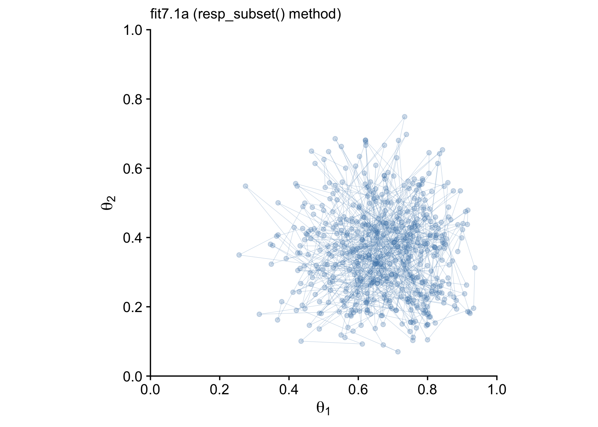
Finally, after all that terrible technical talk, our efforts payed off! I promise, it won’t always be this difficult to fit a model in brms. This is just one of those unfortunate cases where a textbook author’s seemingly simple example required non-default settings and approaches when applied to a software package that wasn’t the one they highlighted in their textbook.
Now let’s try out the second approach.
7.4.4.2 Uneven multivariate Benoulli via the aggregated binomial approach.
Instead of thinking of our data as two vectors of 0’s and 1’s, we can use the aggregate form to summarize them more compactly.
d <-
tibble(n1 = n1,
z1 = z1,
n2 = n2,
z2 = z2)
# what does this look like?
d## # A tibble: 1 × 4
## n1 z1 n2 z2
## <dbl> <dbl> <dbl> <dbl>
## 1 8 6 7 2The resp_trials() function is the second helper that will let us incorporate additional information about the criterion variable(s) into the model. In actual practice, we’ll use it as trials(). The basic idea is that for the first coin, we have z1 == 6 heads out of n1 == 8 trials. We can express that as an intercept-only model as z1 | trials(n1) ~ 1. Thus, we’ll define our two submodels like this.
model_1 <- bf(z1 | trials(n1) ~ 1)
model_2 <- bf(z2 | trials(n2) ~ 1)Notice that when our data are in an aggregated format, we expressed both series of coin flips in one row of the data frame. Therefore, even though the first coin had more trials than the second coin (n1 > n2), we don’t need to invoke the subset() helper. We just need to use trials() to tell brms how long each sequence of coin flips was.
The other new thing is that instead of directly using the Bernoulli likelihood function, we’ll instead be setting family = binomial(link = "identity"). Recall that the Bernoulli function is a special case of the binomial function for which \(N = 1\), for which each data point is a discrete trial3. When each data point is an aggregate of multiple trials, we use the binomial likelihood, instead.
Here’s how to fit the model.
fit7.1b <-
brm(data = d,
family = binomial(link = "identity"),
model_1 + model_2,
prior = c(prior(beta(2, 2), class = Intercept, lb = 0, ub = 1, resp = z1),
prior(beta(2, 2), class = Intercept, lb = 0, ub = 1, resp = z2)),
iter = 3000, warmup = 500, cores = 3, chains = 3,
seed = 7,
file = "fits/fit07.01b")The model summary for our fit7.1b aggregated binomial approach is very similar to the one from our previous fit7.1a approach using the subset() helper.
print(fit7.1b)## Family: MV(binomial, binomial)
## Links: mu = identity
## mu = identity
## Formula: z1 | trials(n1) ~ 1
## z2 | trials(n2) ~ 1
## Data: d (Number of observations: 1)
## Draws: 3 chains, each with iter = 3000; warmup = 500; thin = 1;
## total post-warmup draws = 7500
##
## Population-Level Effects:
## Estimate Est.Error l-95% CI u-95% CI Rhat Bulk_ESS Tail_ESS
## z1_Intercept 0.67 0.13 0.40 0.89 1.00 5660 4952
## z2_Intercept 0.36 0.14 0.12 0.65 1.00 6277 4453
##
## Draws were sampled using sampling(NUTS). For each parameter, Bulk_ESS
## and Tail_ESS are effective sample size measures, and Rhat is the potential
## scale reduction factor on split chains (at convergence, Rhat = 1).Here’s the updated version of Figure 7.8.
draws.b <- as_draws_df(fit7.1b)
p2 <-
draws.b %>%
filter(.draw < 501) %>%
ggplot(aes(x = b_z1_Intercept, y = b_z2_Intercept)) +
geom_point(alpha = 1/4, color = "steelblue") +
geom_path(linewidth = 1/10, alpha = 1/2, color = "steelblue") +
scale_x_continuous(expression(theta[1]), breaks = 0:5 / 5, expand = c(0, 0), limits = 0:1) +
scale_y_continuous(expression(theta[2]), breaks = 0:5 / 5, expand = c(0, 0), limits = 0:1) +
labs(subtitle = "fit7.1b (aggregated binomial method)") +
coord_equal() +
theme_cowplot()
# combine
library(patchwork)
p1 + p2
Just for kicks and giggles, we might also compare the two model types by plotting the marginal posterior densities. This will give is a better sense of how each of the marginal \(\theta\) densities are shaped like the beta distribution.
# combine the posterior samples from the two models
draws <-
bind_rows(
draws.a %>% transmute(`theta[1]` = b_y1_Intercept, `theta[2]` = b_y2_Intercept),
draws.b %>% transmute(`theta[1]` = b_z1_Intercept, `theta[2]` = b_z2_Intercept)
) %>%
mutate(fit = rep(c("fit7.1a", "fit7.1b"), each = n() / 2))
# wrangle
draws %>%
pivot_longer(-fit) %>%
# plot
ggplot(aes(x = value, y = 0)) +
stat_halfeye(point_interval = mode_hdi, .width = .95, fill = "steelblue") +
scale_x_continuous("posterior", breaks = 0:5 / 5, expand = c(0, 0), limits = 0:1) +
scale_y_continuous(NULL, breaks = NULL) +
theme_cowplot() +
theme(panel.spacing.x = unit(0.75, "cm")) +
panel_border() +
facet_grid(fit ~ name, labeller = label_parsed)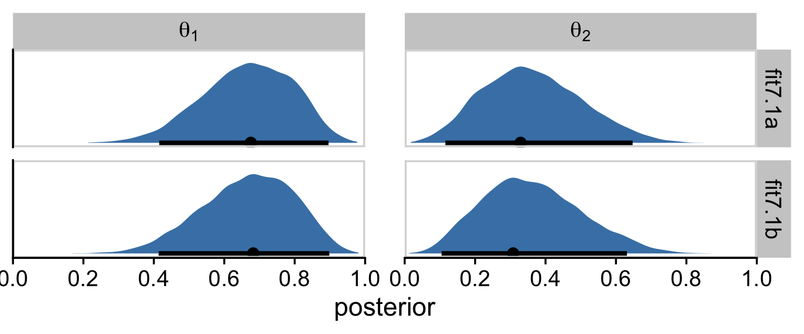
I hope this makes clear that the two estimation methods returned results that are within simulation variance of one another. Had we asked brms for a larger number of posterior draws from each, the results would have been even closer.
7.4.5 Is there a difference between biases?
In his Figure 7.9, Kruschke compared the marginal posterior for \(\theta_1 - \theta_2\), as computed by two methods from the Metropolis algorithm and another two methods from the Gibbs sampler. Here we’ll focus, instead, on the two methods we explored using brms-based Hamiltonian Monte Carlo (HMC).
draws %>%
mutate(dif = `theta[1]` - `theta[2]`,
fit = if_else(fit == "fit7.1a",
"fit7.1a (resp_subset() method)",
"fit7.1b (aggregated binomial method)")) %>%
ggplot(aes(x = dif, y = fit)) +
stat_histinterval(point_interval = mode_hdi, .width = .95,
fill = "steelblue2", slab_color = "steelblue4", outline_bars = T,
breaks = 40, normalize = "panels") +
geom_vline(xintercept = 0, linetype = 3) +
labs(x = expression(theta[1]-theta[2]),
y = NULL) +
coord_cartesian(ylim = c(1.5, 2.4)) +
theme_cowplot() 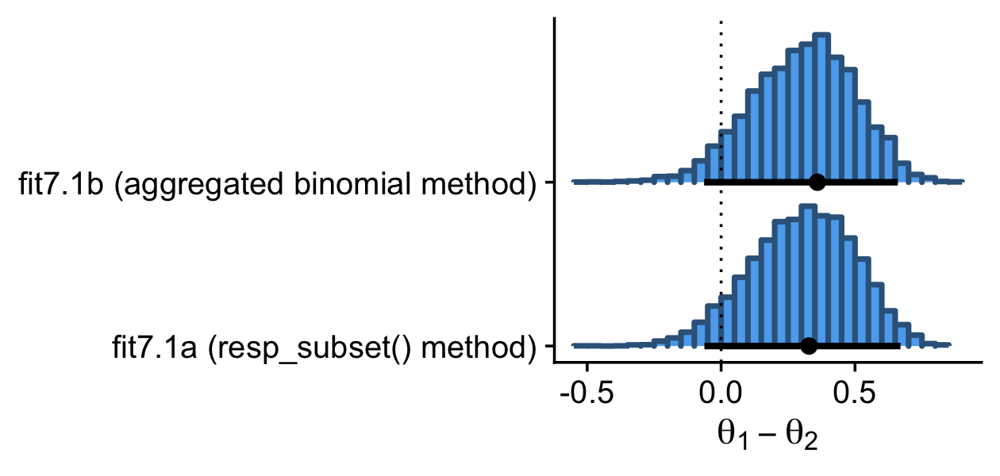
Here are the exact estimates of the mode and 95% HDIs for our difference distribution, \(\theta_1 - \theta_2\).
draws %>%
mutate(dif = `theta[1]` - `theta[2]`) %>%
group_by(fit) %>%
mode_hdi(dif) %>%
mutate_if(is.double, round, digits = 3)## # A tibble: 2 × 7
## fit dif .lower .upper .width .point .interval
## <chr> <dbl> <dbl> <dbl> <dbl> <chr> <chr>
## 1 fit7.1a 0.328 -0.062 0.67 0.95 mode hdi
## 2 fit7.1b 0.36 -0.064 0.66 0.95 mode hdiI wouldn’t put too much emphasis on the seemingly large differences in the two modes. Among the three primary measures of central tendency, modes are particularly sensitive to things like sample variance. Here’s what happens if we compare the two methods with the mean, instead.
draws %>%
mutate(dif = `theta[1]` - `theta[2]`) %>%
group_by(fit) %>%
summarise(mean_of_the_difference_score = mean(dif) %>% round(digits = 3))## # A tibble: 2 × 2
## fit mean_of_the_difference_score
## <chr> <dbl>
## 1 fit7.1a 0.303
## 2 fit7.1b 0.305Now the difference between the two methods seems trivial.
7.4.6 Terminology: MCMC.
Any simulation that samples a lot of random values from a distribution is called a Monte Carlo simulation, named after the dice and spinners and shufflings of the famous casino locale. The appellation “Monte Carlo” is attributed (Eckhardt, 1987) to the mathematicians Stanislaw Ulam (1909–1984) and John von Neumann (1903–1957). (p. 177)
In case you didn’t know, brms is a user-friendly interface for the Stan probabilistic programing language [Stan; Carpenter et al. (2017)] and Stan is named after Stanislaw Ulam.
7.5 MCMC representativeness, accuracy, and efficiency
We have three main goals in generating an MCMC sample from the posterior distribution:
- The values in the chain must be representative of the posterior distribution. They should not be unduly influenced by the arbitrary initial value of the chain, and they should fully explore the range of the posterior distribution without getting stuck.
- The chain should be of sufficient size so that estimates are accurate and stable. In particular, the estimates of the central tendency (such as median or mode), and the limits of the \(95\%\) HDI, should not be much different if the MCMC analysis is run again (using different seed states for the pseudorandom number generators).
- The chain should be generated efficiently, with as few steps as possible, so not to exceed our patience or computing power. (p. 178, emphasis in the original)
7.5.1 MCMC representativeness.
Kruschke defined our new data in the note for Figure 7.10 (p. 179).
z <- 35
n <- 50
d <- tibble(y = rep(0:1, times = c(n - z, z)))Here we fit the model. Note how since we’re just univariate, it’s easy to switch back to directly modeling with the Bernoulli likelihood.
fit7.2 <-
brm(data = d,
family = bernoulli(link = identity),
y ~ 1,
prior(beta(2, 2), class = Intercept, lb = 0, ub = 1),
iter = 10000, warmup = 500, cores = 3, chains = 3,
seed = 7,
file = "fits/fit07.02")On page 179, Kruschke discussed burn-in steps within the Gibbs framework:
The preliminary steps, during which the chain moves from its unrepresentative initial value to the modal region of the posterior, is called the burn-in period. For realistic applications, it is routine to apply a burn-in period of several hundred to several thousand steps.
For each HMC chain, the first \(n\) iterations are called “warmups.” In this example, \(n = 500\) (i.e., warmup = 500). Within the Stan-HMC paradigm, warmups are somewhat analogous to but not synonymous with burn-in iterations as done by the Gibbs sampling in JAGS. But HMC warmups are like Gibbs burn-ins in that both are discarded and not used to describe the posterior. For more on warmup, check out McElreath’s lecture, starting here or, for more detail, the HMC Algorithm Parameters section (15.2) of the Stan reference manual, version 2.29 (Stan Development Team, 2022b).
It appears that the upshot of all this is some of the packages in the Stan ecosystem don’t make it easy to extract the warmup values. For example, the brms::plot() function excludes them from the trace plot without the option to include them.
plot(fit7.2, widths = c(2, 3))
Notice how the \(x\)-axis on the trace plot ranges from 0 to 9,500. Now recall that our model code included iter = 10000, warmup = 500. Those 9,500 iterations in the trace plot are excluding the first 500 warmup iterations. This code is a little janky, but if you really want those warmup iterations, you can extract them from the fit7.2 object like this.
warmups <-
c(fit7.2$fit@sim$samples[[1]]$b_Intercept[1:500],
fit7.2$fit@sim$samples[[2]]$b_Intercept[1:500],
fit7.2$fit@sim$samples[[3]]$b_Intercept[1:500]) %>%
# since these come from lists, here we'll convert them to a data frame
as.data.frame() %>%
rename(b_Intercept = ".") %>%
# we'll need to recapture the iteration and chain information
mutate(iter = rep(1:500, times = 3),
chain = factor(rep(1:3, each = 500),
levels = c("1", "2", "3")))
warmups %>%
head()## b_Intercept iter chain
## 1 0.7625908 1 1
## 2 0.7625908 2 1
## 3 0.7625908 3 1
## 4 0.7655583 4 1
## 5 0.7444207 5 1
## 6 0.6654870 6 1The bayesplot package (Gabry et al., 2019; Gabry & Mahr, 2022) makes it easier to reproduce some of the plots in Figure 7.10.
library(bayesplot)We’ll reproduce the upper left panel with mcmc_trace().
mcmc_trace(warmups, pars = "b_Intercept")
As an alternative, we can also extract the warmup draws from a brm() fit with the ggmcmc package (Fernández i Marín, 2016, 2021).
library(ggmcmc)The ggmcmc package has a variety of convenience functions for working with MCMC chains. The ggs() function extracts the posterior draws, including warmup, and arranges them in a tidy tibble. With those in hand, we can now make a trace plot with warmup draws.
ggs(fit7.2) %>%
filter(Iteration < 501 &
Parameter == "b_Intercept") %>%
mutate(chain = factor(Chain)) %>%
ggplot(aes(x = Iteration, y = value, color = chain)) +
geom_line() +
scale_colour_brewer(direction = -1) +
labs(title = "My custom trace plots with warmups via ggmcmc::ggs()",
x = NULL, y = NULL) +
theme_cowplot(font_size = 12)
You can make the same basic plot by pulling the posterior draws with as_draws_df(), as long as you include the inc_warmup = TRUE argument. Then you just have to be careful to filter() by the correct values in the .iteration meta-column.
draws <- as_draws_df(fit7.2, inc_warmup = T)
draws %>%
filter(.iteration <= 500) %>%
ggplot(aes(x = .iteration, y = b_Intercept, color = factor(.chain))) +
geom_line() +
scale_colour_brewer("chain", direction = -1) +
labs(title = "My custom trace plots with warmups via as_draws_df()",
x = NULL, y = NULL) +
theme_cowplot(font_size = 12)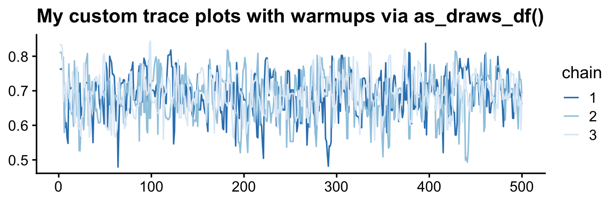
Anyway, it appears our HMC warmup draws found the posterior quite quickly. Here’s the autocorrelation plot.
mcmc_acf(warmups, pars = "b_Intercept", lags = 25)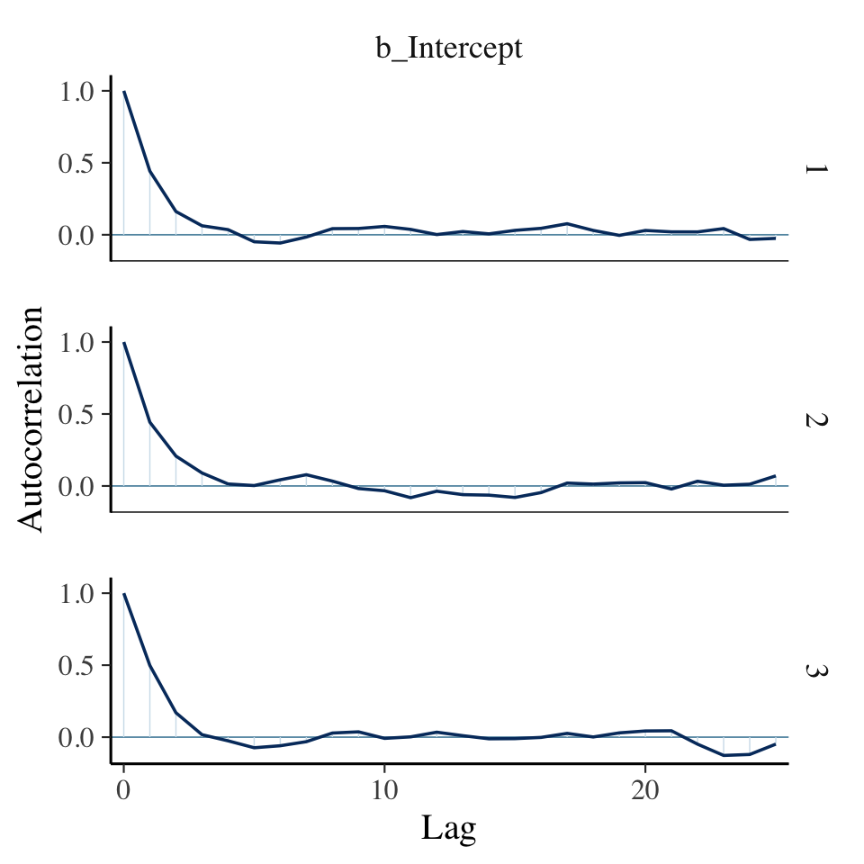
Our autocorrelation plots indicate substantially lower autocorrelations yielded by HMC as implemented by Stan than what Kruschke generated with the MH algorithm. This is one of the reasons folks using HMC tend to use fewer iterations than those using MH or Gibbs.
If you were unhappy with the way mcmc_acf() defaults to faceting the plot by chain, you could always extract the data from the function and use them to make the plot the way you prefer. E.g.,
mcmc_acf(warmups)$data %>%
as_tibble() %>%
filter(Parameter == "b_Intercept") %>%
ggplot(aes(x = Lag, y = AC,
color = Chain %>% as.factor())) +
geom_hline(yintercept = 0, color = "white") +
geom_point(size = 2/3) +
geom_line() +
scale_colour_brewer(direction = -1) +
ylab("Autocorrelation") +
theme_cowplot() +
theme(legend.position = "none")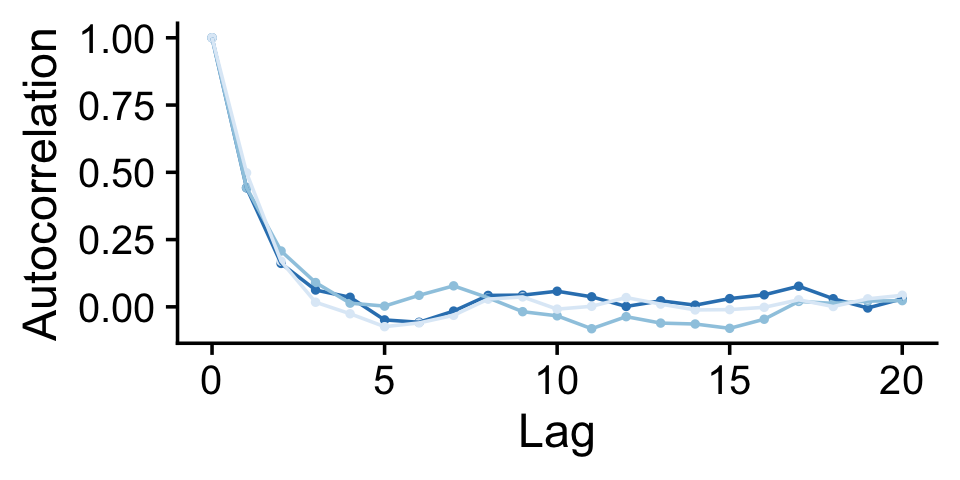
Here are the overlaid densities.
mcmc_dens_overlay(warmups, pars = c("b_Intercept"))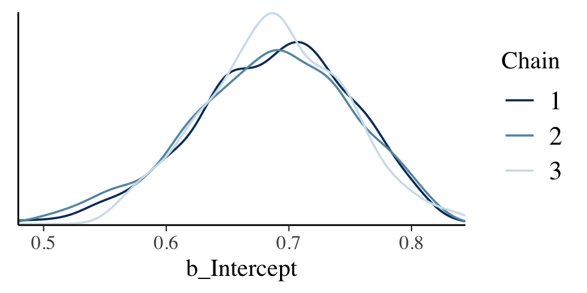
The densities aren’t great, but they still appear nicer than those in for the burn-in iterations in the text. With our warmups in their current state, I’m not aware how we might conveniently make a shrink factor plot, as seen in the lower left of Figure 7.10. So it goes…
Figure 7.11 examined the post-burn-in iterations. We’ll follow suit with our post-warmup iterations. Note that for use with the bayesplot::mcmc_ functions, we’ll generally want our posterior draws in a data frame format. We an do this by extracting them with the brms::as_draws_df() function.
draws <- as_draws_df(fit7.2)
draws %>%
mutate(chain = .chain) %>%
mcmc_trace(pars = "b_Intercept")
The autocorrelation plots:
draws %>%
mutate(chain = .chain) %>%
mcmc_acf(pars = "b_Intercept", lags = 40)
As with the warmups, above, the post-warmup autocorrelation plots indicate substantially lower autocorrelations yielded by HMC as implemented by Stan than what Kruschke generated with the MH algorithm. This is one of the reasons folks using HMC tend to use fewer iterations than those using MH or Gibbs.
Here are the overlaid densities.
draws %>%
mutate(chain = .chain) %>%
mcmc_dens_overlay(pars = "b_Intercept")
Now that we’re focusing on the post-warmup iterations, we can make a shrink factor plot. We’ll do so with the coda::gelman.plot() function. But you can’t just dump your brm() fit object into gelman.plot(). It’s the wrong object type. However, brms offers the as.mcmc() function which will convert brm() objects for use in functions from the coda package.
fit7.2_c <- as.mcmc(fit7.2)
fit7.2_c %>% glimpse()## List of 3
## $ : 'mcmc' num [1:9500, 1:3] 0.64 0.596 0.702 0.693 0.675 ...
## ..- attr(*, "dimnames")=List of 2
## .. ..$ iterations: NULL
## .. ..$ parameters: chr [1:3] "b_Intercept" "lprior" "lp__"
## ..- attr(*, "mcpar")= num [1:3] 501 10000 1
## $ : 'mcmc' num [1:9500, 1:3] 0.757 0.73 0.54 0.578 0.583 ...
## ..- attr(*, "dimnames")=List of 2
## .. ..$ iterations: NULL
## .. ..$ parameters: chr [1:3] "b_Intercept" "lprior" "lp__"
## ..- attr(*, "mcpar")= num [1:3] 501 10000 1
## $ : 'mcmc' num [1:9500, 1:3] 0.67 0.677 0.677 0.631 0.631 ...
## ..- attr(*, "dimnames")=List of 2
## .. ..$ iterations: NULL
## .. ..$ parameters: chr [1:3] "b_Intercept" "lprior" "lp__"
## ..- attr(*, "mcpar")= num [1:3] 501 10000 1
## - attr(*, "class")= chr "mcmc.list"With our freshly-converted fit2_c object in hand, we’re ready to plot.
gelman.plot(fit7.2_c[, "b_Intercept", ])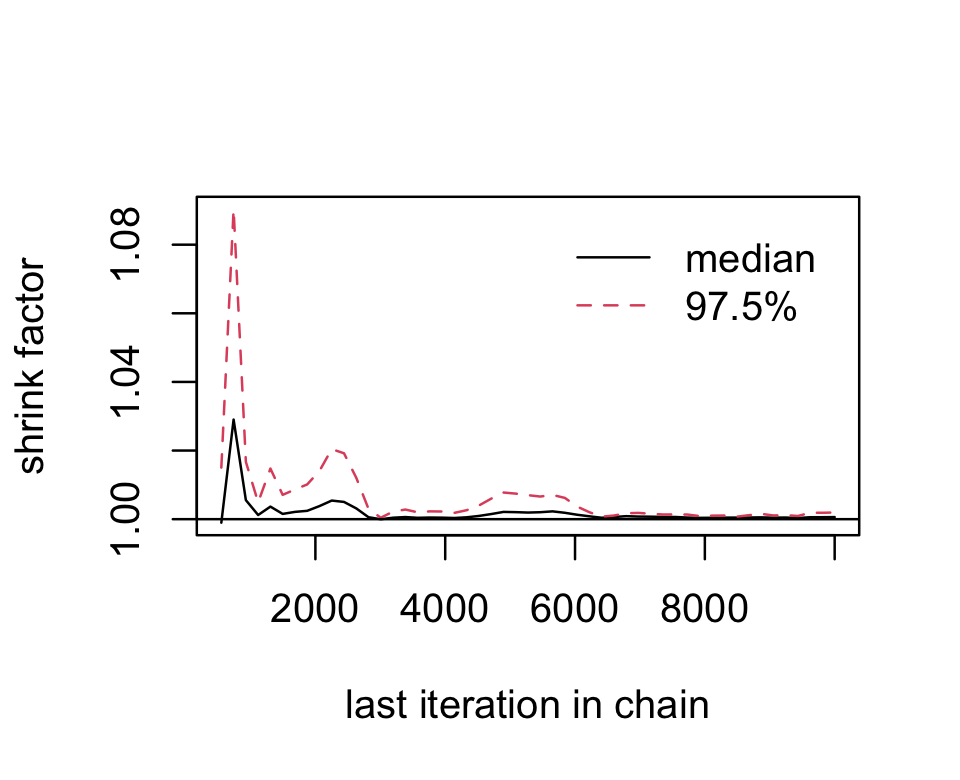
Looks great. As Kruschke explained on page 181, that plot is based on the potential scale reduction factor, or \(\widehat R\) as it’s typically referred to in the Stan ecosystem. Happily, brms reports the \(\widehat R\) values for the major model parameters using print() or summary().
print(fit7.2)## Family: bernoulli
## Links: mu = identity
## Formula: y ~ 1
## Data: d (Number of observations: 50)
## Draws: 3 chains, each with iter = 10000; warmup = 500; thin = 1;
## total post-warmup draws = 28500
##
## Population-Level Effects:
## Estimate Est.Error l-95% CI u-95% CI Rhat Bulk_ESS Tail_ESS
## Intercept 0.69 0.06 0.56 0.80 1.00 9810 11160
##
## Draws were sampled using sampling(NUTS). For each parameter, Bulk_ESS
## and Tail_ESS are effective sample size measures, and Rhat is the potential
## scale reduction factor on split chains (at convergence, Rhat = 1).Instead of a running value, you get a single statistic in the ‘Rhat’ column.
On page 181, Kruschke discussed how his overlaid density plots include the HDIs, by chain. The convenience functions from brms and bayesplot don’t easily get us there. But we can get those easy enough with a little help tidybayes::stat_halfeye(). Note that for use with the various tidybayes functions, we’ll want the posterior draws in the format returned by the brms::as_draws_df() function, but this time without the warmups included.
draws <- as_draws_df(fit7.2)
draws %>%
mutate(chain = factor(.chain)) %>%
ggplot(aes(x = b_Intercept, y = chain, fill = chain)) +
stat_halfeye(point_interval = mode_hdi,
.width = .95) +
scale_fill_brewer(direction = -1) +
scale_y_discrete(expand = expansion(mult = 0.035)) +
theme_cowplot() +
theme(legend.position = "none")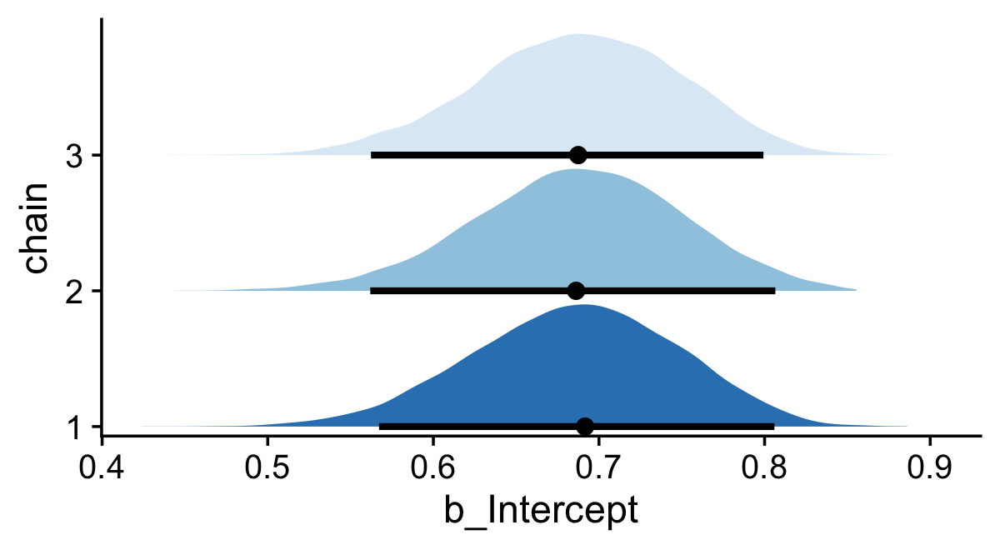
If you would like your chain-wise posterior densities to overlap, one way would be to play around with the height and alpha parameters within the stat_halfeye() function.
draws %>%
mutate(chain = factor(.chain)) %>%
ggplot(aes(x = b_Intercept, y = chain, fill = chain)) +
stat_halfeye(point_interval = mode_hdi, .width = .95,
height = 9, alpha = 3/4) +
scale_fill_brewer() +
scale_y_discrete(expand = expansion(mult = 0.2)) +
theme_cowplot() +
theme(legend.position = "none")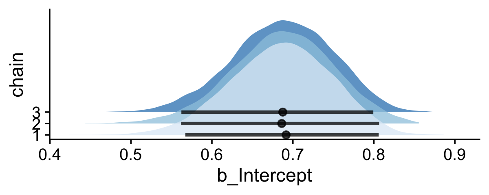
7.5.2 MCMC accuracy.
We want
measures of chain length and accuracy that take into account the clumpiness of the chain. And for that, we need a measure of clumpiness. We will measure clumpiness as autocorrelation, which is simply the correlation of the chain values with the chain values \(k\) steps ahead. There is a different autocorrelation for each choice of \(k\). (p. 182, emphasis in the original)
We made a couple autocorrelation plots in the last section, but now it’s time to get a better sense of what they mean. Just a little further in the text, Kruschke wrote: “The number of steps between the chain and its superimposed copy is called the lag” (p. 182, emphasis in the original). In case it’s not clear, lag is a general term and can be applied to contexts outside of MCMC chains. You find it used sometimes in the longitudinal statistical literature, particularly for what are called timeseries models. Sadly, we won’t be fitting those in this book. If you’re curious, McElreath discussed them briefly in Chapter 16 of his (2020) text.
We, however, will have to contend with a technical quirk within the tidyverse. The two dplyr functions relevant to lags are called lag() and lead(). Here’s a little example to see how they work.
tibble(step = 1:5) %>%
mutate(lag = lag(step, n = 1),
lead = lead(step, n = 1))## # A tibble: 5 × 3
## step lag lead
## <int> <int> <int>
## 1 1 NA 2
## 2 2 1 3
## 3 3 2 4
## 4 4 3 5
## 5 5 4 NAThe original values are 1:5 in the step column. When you plug those into lag(n = 1), you get back the value from the previous row. The opposite happens when you plug step into lead(n = 1); there you get back the value from the next row. Returning to the block quote above, Kruschke wrote that autocorrelations are “the correlation of the chain values with the chain values \(k\) steps ahead” (p. 182, emphasis added). Within the context of the lag() and lead() functions, their n arguments are what Kruschke called \(k\), which is no big deal. Confusingly, though, since Kruschke wanted to focus on MCMC chains values that were “\(k\) steps ahead,” that means we’ll have to use the lead() function, not lag(). Please don’t fret about the semantics, here. Both Kruschke and the dplyr package are correct. We’re lagging. But in this specific case, we’ll be lagging our data with the lead() function. You can learn more about lag() and lead() here.
On to the plot! If you read closely in the text (pp. 182–183), Kruschke didn’t elaborate on which model he was showcasing in Figure 7.12. We just get the vague explanation that the “upper panels show an MCMC chain of 70 steps, superimposed with the same chain translated a certain number of steps ahead” (p. 182). To make our lives simple, let’s just use the model we’ve been working with, fit7.2. Our sole parameter is the intercept which, as it turns out, will not be on the same scale as you see in the \(y\)-axis of Figure 7.12. So it goes… But anyways, our first step towards making our variant of the plot is to wrangle out posterior draws a bit. We’ll call the wrangled data frame lagged_draws.
lagged_draws <-
draws %>%
filter(.chain == 1 & .draw < 71) %>%
select(b_Intercept, .draw) %>%
# sometimes the unlagged data are called lag_0
rename(lag_0 = b_Intercept) %>%
# lags for three different levels of k
mutate(lag_1 = lead(lag_0, n = 1),
lag_5 = lead(lag_0, n = 5),
lag_10 = lead(lag_0, n = 10)) %>%
pivot_longer(-.draw, names_to = "key") Now here’s our version of the top row.
p1 <-
lagged_draws %>%
filter(key %in% c("lag_0", "lag_1")) %>%
ggplot(aes(x = .draw, y = value, color = key)) +
geom_point(aes(alpha = .draw == 50, shape = .draw == 50)) +
geom_line(linewidth = 1/3, alpha = 1/2) +
annotate(geom = "text",
x = 46, y = c(.825, .79),
label = c("Original", "Lagged"),
color = c("black", "steelblue")) +
scale_color_manual(values = c("black", "steelblue")) +
scale_y_continuous(breaks = 6:8 / 10, limits = c(.53, .84)) +
labs(title = "Lag 1",
x = "Index 1:70",
y = expression(theta))
p2 <-
lagged_draws %>%
filter(key %in% c("lag_0", "lag_5")) %>%
ggplot(aes(x = .draw, y = value, color = key)) +
geom_point(aes(alpha = .draw == 50, shape = .draw == 50)) +
geom_line(linewidth = 1/3, alpha = 1/2) +
scale_color_manual(values = c("black", "steelblue")) +
scale_y_continuous(NULL, labels = NULL,
breaks = 6:8 / 10, limits = c(.53, .84)) +
labs(title = "Lag 5",
x = "Index 1:70")
p3 <-
lagged_draws %>%
filter(key %in% c("lag_0", "lag_10")) %>%
ggplot(aes(x = .draw, y = value, color = key)) +
geom_point(aes(alpha = .draw == 50, shape = .draw == 50)) +
geom_line(linewidth = 1/3, alpha = 1/2) +
scale_color_manual(values = c("black", "steelblue")) +
scale_y_continuous(NULL, labels = NULL,
breaks = 6:8 / 10, limits = c(.53, .84)) +
labs(title = "Lag 10",
x = "Index 1:70")
# combine
library(patchwork)
(p1 + p2 + p3) &
scale_alpha_manual(values = c(1/2, 1)) &
scale_shape_manual(values = c(1, 19)) &
theme_cowplot() &
theme(legend.position = "none") 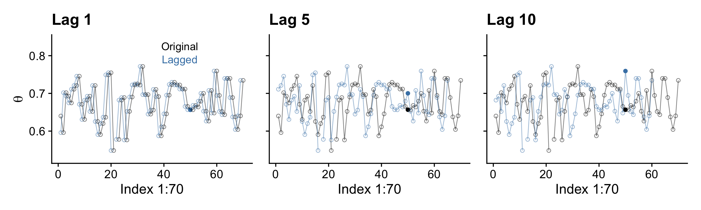
Here’s the middle row for Figure 7.12.
p1 <-
lagged_draws %>%
pivot_wider(names_from = key, values_from = value) %>%
ggplot(aes(x = lag_1, y = lag_0)) +
stat_smooth(method = "lm") +
geom_point(aes(alpha = .draw == 50, shape = .draw == 50))
p2 <-
lagged_draws %>%
pivot_wider(names_from = key, values_from = value) %>%
ggplot(aes(x = lag_5, y = lag_0)) +
stat_smooth(method = "lm") +
geom_point(aes(alpha = .draw == 50, shape = .draw == 50)) +
scale_y_continuous(NULL, labels = NULL)
p3 <-
lagged_draws %>%
pivot_wider(names_from = key, values_from = value) %>%
ggplot(aes(x = lag_10, y = lag_0)) +
stat_smooth(method = "lm") +
geom_point(aes(alpha = .draw == 50, shape = .draw == 50)) +
scale_y_continuous(NULL, labels = NULL)
# combine
(p1 + p2 + p3) &
scale_alpha_manual(values = c(1/2, 1)) &
scale_shape_manual(values = c(1, 19)) &
theme_cowplot() &
theme(legend.position = "none")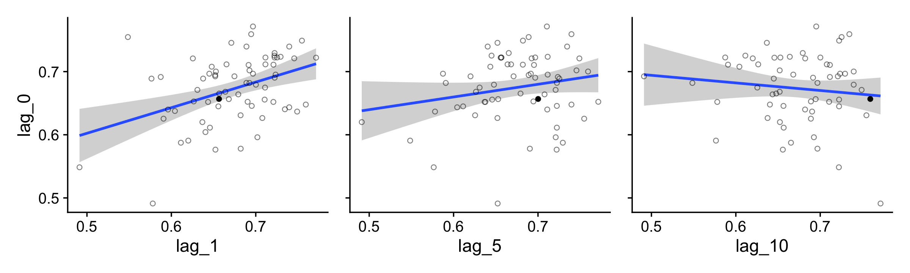
For kicks and giggles, we used stat_smooth() to add an OLS regression line with its 95% frequentist confidence intervals to each plot.
If you want the Pearson’s correlations among the lags, the lowerCor() function from the psych package (Revelle, 2022) can be handy.
library(psych)
lagged_draws %>%
pivot_wider(names_from = key, values_from = value) %>%
select(-.draw) %>%
lowerCor(digits = 3, use = "pairwise.complete.obs")## lag_0 lag_1 lag_5 lg_10
## lag_0 1.000
## lag_1 0.408 1.000
## lag_5 0.202 0.012 1.000
## lag_10 -0.121 -0.232 0.231 1.000For our version of the bottom of Figure 7.12, we’ll use the bayesplot::mcmc_acf_bar() function to get the autocorrelation bar plot, by chain.
draws %>%
mutate(chain = .chain) %>%
mcmc_acf_bar(pars = "b_Intercept",
lags = 20)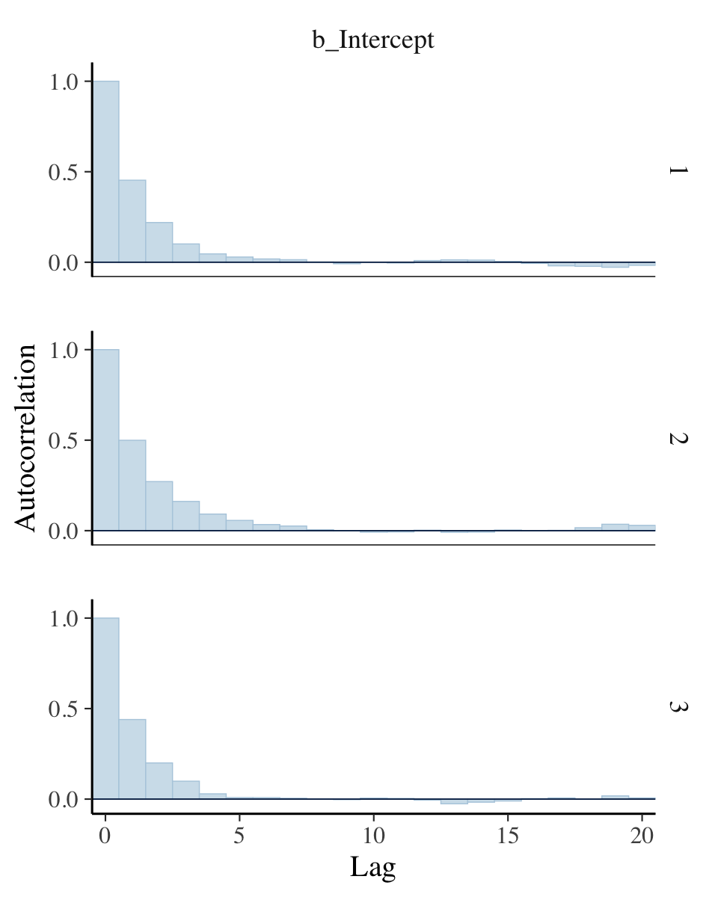
All three rows of our versions for Figure 7.12 indicate in their own way how much lower our autocorrelations were than the ones in the text.
If you’re curious of the effective sample sizes for the parameters in your brms models, just look at the model summary using either summary() or print().
print(fit7.2)## Family: bernoulli
## Links: mu = identity
## Formula: y ~ 1
## Data: d (Number of observations: 50)
## Draws: 3 chains, each with iter = 10000; warmup = 500; thin = 1;
## total post-warmup draws = 28500
##
## Population-Level Effects:
## Estimate Est.Error l-95% CI u-95% CI Rhat Bulk_ESS Tail_ESS
## Intercept 0.69 0.06 0.56 0.80 1.00 9810 11160
##
## Draws were sampled using sampling(NUTS). For each parameter, Bulk_ESS
## and Tail_ESS are effective sample size measures, and Rhat is the potential
## scale reduction factor on split chains (at convergence, Rhat = 1).Look at the last two columns in the Intercept summary. Earlier versions of brms had one column named Eff.Sample, which reported the effect sample size as discussed by Kruschke. Starting with version 2.10.0, brms now returns Bulk_ESS and Tail_ESS, instead. These originate from a (2021) paper by Stan-team all-stars Vehtari, Gelman, Simpson, Carpenter, and Bürkner. From their paper, we read:
When reporting quantile estimates or posterior intervals, we strongly suggest assessing the convergence of the chains for these quantiles. In Section 4.3, we show that convergence of Markov chains is not uniform across the parameter space, that is, convergence might be different in the bulk of the distribution (e.g., for the mean or median) than in the tails (e.g., for extreme quantiles). We propose diagnostics and effective sample sizes specifically for extreme quantiles. This is different from the standard ESS estimate (which we refer to as bulk-ESS), which mainly assesses how well the centre of the distribution is resolved. Instead, these “tail-ESS” measures allow the user to estimate the MCSE for interval estimates. (pp. 672–673)
For more technical details, see the paper. The Bulk_ESS column in current versions of brms is what was previously referred to as Eff.Sample. This is what corresponds to what Kruschke meant when referring to effective sample size. Now rather than focusing solely on ‘the center of the’ posterior distribution’ as indexed by Bulk_ESS, we also gauge the effective sample size in the posterior intervals using Tail_ESS.
Anyway, I’m not sure how to reproduce Kruschke’s MCMC ESS simulation studies. My confusion comes from at least two levels. If you read in the text, Kruschke described his simulation as based on “MCMC chains from the normal distribution” (p. 184). Though I do know how to initialize HMC chains for a model on data from the normal distribution, I have no idea how one would initialize chains from the standard normal distribution, itself. Second, if you view Kruschke’s simulation as based on a model which one could feasibly fit with brms, I don’t know how one would specify “an ESS of 10,000” for each iteration of the simulation. This is because brms is set up to fit models with a fixed number of iterations, for which the ESS values will vary. Kruschke’s simulation seems to be set in reverse. For more details on Kruschke’s simulation, you’ll just have to read through the text. Anyway, if you know how to fit such a simulation using brms, please share your code in my GitHub issue #15.
If you’re interested in the Monte Carlo standard error (MCSE) for your brms parameters, the easiest way is to tack $fit onto your fit object.
fit7.2$fit## Inference for Stan model: 20e3ba6b38506cfef876fa747cb5168b.
## 3 chains, each with iter=10000; warmup=500; thin=1;
## post-warmup draws per chain=9500, total post-warmup draws=28500.
##
## mean se_mean sd 2.5% 25% 50% 75% 97.5% n_eff Rhat
## b_Intercept 0.69 0.00 0.06 0.56 0.65 0.69 0.73 0.80 9894 1
## lprior 0.23 0.00 0.12 -0.05 0.17 0.25 0.32 0.39 9423 1
## lp__ -32.34 0.01 0.70 -34.32 -32.51 -32.08 -31.90 -31.85 10484 1
##
## Samples were drawn using NUTS(diag_e) at Wed Apr 20 09:33:05 2022.
## For each parameter, n_eff is a crude measure of effective sample size,
## and Rhat is the potential scale reduction factor on split chains (at
## convergence, Rhat=1).This returns an rstan-like summary (Stan Development Team, 2022a). The ‘se_mean’ column is the MCSE.
7.5.3 MCMC efficiency.
Kruschke wrote: “It is often the case in realistic applications that there is strong autocorrelation for some parameters, and therefore, an extremely long chain is required to achieve an adequate ESS or MCSE” (p. 187). As we’ll see, this is generally less of a problem for HMC than for MH or Gibbs. But it does still crop up, particularly in complicated models. As he wrote on the following page, “one sampling method that can be relatively efficient is Hamiltonian Monte Carlo.” Indeed.
7.6 Summary
Let’s regain perspective on the forest of Bayesian inference after focusing on the trees of MCMC. Recall that the overarching goal of Bayesian analysis is identifying the credibility of parameter values in a descriptive model of data. Bayes’ rule provides an exact mathematical formulation for the posterior distribution on the parameter values. But the exact form requires evaluation of an integral that might be intractable for realistically complex models. Therefore, we approximate the posterior distribution, to arbitrarily high accuracy, using MCMC methods. Because of recent developments in MCMC algorithms, software that cleverly applies them in complex models, and hardware that runs them incredibly quickly, we can now use MCMC methods to analyze realistically complex models that would have been impossible only a few decades ago. (pp. 188–189)
Session info
sessionInfo()## R version 4.2.2 (2022-10-31)
## Platform: x86_64-apple-darwin17.0 (64-bit)
## Running under: macOS Big Sur ... 10.16
##
## Matrix products: default
## BLAS: /Library/Frameworks/R.framework/Versions/4.2/Resources/lib/libRblas.0.dylib
## LAPACK: /Library/Frameworks/R.framework/Versions/4.2/Resources/lib/libRlapack.dylib
##
## locale:
## [1] en_US.UTF-8/en_US.UTF-8/en_US.UTF-8/C/en_US.UTF-8/en_US.UTF-8
##
## attached base packages:
## [1] stats graphics grDevices utils datasets methods base
##
## other attached packages:
## [1] psych_2.2.9 ggmcmc_1.5.1.1 bayesplot_1.10.0 patchwork_1.1.2 brms_2.18.0
## [6] Rcpp_1.0.9 coda_0.19-4 tidybayes_3.0.2 cowplot_1.1.1 forcats_0.5.1
## [11] stringr_1.4.1 dplyr_1.0.10 purrr_1.0.1 readr_2.1.2 tidyr_1.2.1
## [16] tibble_3.1.8 ggplot2_3.4.0 tidyverse_1.3.2
##
## loaded via a namespace (and not attached):
## [1] readxl_1.4.1 backports_1.4.1 plyr_1.8.7 igraph_1.3.4
## [5] splines_4.2.2 svUnit_1.0.6 crosstalk_1.2.0 TH.data_1.1-1
## [9] rstantools_2.2.0 inline_0.3.19 digest_0.6.31 htmltools_0.5.3
## [13] fansi_1.0.3 magrittr_2.0.3 checkmate_2.1.0 googlesheets4_1.0.1
## [17] tzdb_0.3.0 modelr_0.1.8 RcppParallel_5.1.5 matrixStats_0.63.0
## [21] sandwich_3.0-2 xts_0.12.1 prettyunits_1.1.1 colorspace_2.0-3
## [25] rvest_1.0.2 ggdist_3.2.1 haven_2.5.1 xfun_0.35
## [29] callr_3.7.3 crayon_1.5.2 jsonlite_1.8.4 lme4_1.1-31
## [33] survival_3.4-0 zoo_1.8-10 glue_1.6.2 gtable_0.3.1
## [37] gargle_1.2.0 emmeans_1.8.0 distributional_0.3.1 pkgbuild_1.3.1
## [41] rstan_2.21.8 abind_1.4-5 scales_1.2.1 mvtnorm_1.1-3
## [45] GGally_2.1.2 DBI_1.1.3 miniUI_0.1.1.1 viridisLite_0.4.1
## [49] xtable_1.8-4 HDInterval_0.2.4 stats4_4.2.2 StanHeaders_2.21.0-7
## [53] DT_0.24 htmlwidgets_1.5.4 httr_1.4.4 threejs_0.3.3
## [57] RColorBrewer_1.1-3 arrayhelpers_1.1-0 posterior_1.3.1 ellipsis_0.3.2
## [61] reshape_0.8.9 pkgconfig_2.0.3 loo_2.5.1 farver_2.1.1
## [65] sass_0.4.2 dbplyr_2.2.1 utf8_1.2.2 tidyselect_1.2.0
## [69] labeling_0.4.2 rlang_1.0.6 reshape2_1.4.4 later_1.3.0
## [73] munsell_0.5.0 cellranger_1.1.0 tools_4.2.2 cachem_1.0.6
## [77] cli_3.6.0 generics_0.1.3 broom_1.0.2 evaluate_0.18
## [81] fastmap_1.1.0 processx_3.8.0 knitr_1.40 fs_1.5.2
## [85] nlme_3.1-160 projpred_2.2.1 mime_0.12 xml2_1.3.3
## [89] compiler_4.2.2 shinythemes_1.2.0 rstudioapi_0.13 gamm4_0.2-6
## [93] reprex_2.0.2 bslib_0.4.0 stringi_1.7.8 highr_0.9
## [97] ps_1.7.2 Brobdingnag_1.2-8 lattice_0.20-45 Matrix_1.5-1
## [101] nloptr_2.0.3 markdown_1.1 shinyjs_2.1.0 tensorA_0.36.2
## [105] vctrs_0.5.1 pillar_1.8.1 lifecycle_1.0.3 jquerylib_0.1.4
## [109] bridgesampling_1.1-2 estimability_1.4.1 httpuv_1.6.5 R6_2.5.1
## [113] bookdown_0.28 promises_1.2.0.1 gridExtra_2.3 codetools_0.2-18
## [117] boot_1.3-28 colourpicker_1.1.1 MASS_7.3-58.1 gtools_3.9.4
## [121] assertthat_0.2.1 withr_2.5.0 mnormt_2.1.0 shinystan_2.6.0
## [125] multcomp_1.4-20 mgcv_1.8-41 parallel_4.2.2 hms_1.1.1
## [129] grid_4.2.2 minqa_1.2.5 rmarkdown_2.16 googledrive_2.0.0
## [133] shiny_1.7.2 lubridate_1.8.0 base64enc_0.1-3 dygraphs_1.1.1.6References
We will get a proper introduction to the binomial probability distribution in Section 11.1.2.↩︎
Kruschke briefly addressed this in his footnote #2 in Section 6.2 (p. 126). We will connect the Bernoulli and binomial approaches more fully in Chapter 21.↩︎